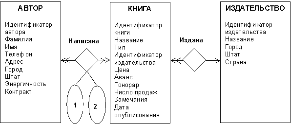

Лабораторная работа №1
Выборка данных из базы данных с использованием языка SQL
Цель работы: изучить принципы работы с базой данных в архитектуре клиент-сервер, изучить спецификации запроса языка баз данных SQL, получить практические навыки составления и содержательной интерпретации запросов выборки данных (операторов SELECT), а также их выполнения на SQL-сервере с использованием клиентских утилит.
Порядок выполнения работы
- Изучить структуру и элементы SQL-запроса выборки, в том числе разделы FROM, WHERE, GROUP BY, HAVING, ORDER BY, а также предикаты условия поиска и агрегатные функции.
- Изучить операции реляционной алгебры (соединение, пересечение, объединение, разность и др.).
- Изучить утилиту ISQL/w, входящую в набор клиентских утилит для СУБД SQL Server.
- Изучить состав базы данных книготорговой компании (база данных pubs), структуру и семантику ее таблиц.
- Получить у преподавателя номер варианта задания.
- В соответствии с вариантом задания типа А произвести содержательную интерпретацию заданных SQL-запросов, выполнить их на SQL-сервере с использованием клиентских утилит ISQL/w или SQL Enterprise Manager (SQL-EM), проинтерпретировать результаты выполнения запросов.
- В соответствии с вариантом задания В составить SQL-запросы по их заданному содержательному описанию, выполнить SQL-запросы на SQL-сервере с использованием клиентских утилит ISQL/w или SQL-EM, проинтерпретировать результаты выполнения запросов.
- Оформить отчет.
Содержание отчета
- Титульный лист;
- Цель работы;
- Тексты SQL-запросов и их
- Содержательная интерпретация
- Результаты выполнения запросов по заданиям типа А и В и их интерпретация
- Выводы
Основные сведения
Язык SQL
Первый международный стандарт языка SQL был принят в 1989 г. (SQL/89). В конце 1992 г. Был принят новый международный стандарт SQL/92. “Родным” языком Microsoft SQL Server является язык Transact-SQL (T-SQL), являющийся диалектом стандартного языка SQL. T-SQL поддерживает большинство возможностей языков SQL/89 и SQL/92, а также ряд расширений, увеличивающих возможность программирования и гибкость языка. В частности, в язык T-SQL добавлены конструкции для задания последовательности операций управления в программе (например, if и while), локальных переменных и других конструкций, позволяющих писать более сложные запросы и строить программные объекты, хранящиеся на сервере, в том числе процедуры и триггеры.
Язык SQL включает следующие языки:
- язык определения данных (Data Definition Language или DDL), предназначенный для добавления, модификации и удаления данных в таблицах;
- язык модификации данных (Data Modification Language или DML), предназначенный для добавления, модификации и удаления данных в таблицах.
В синтаксических конструкциях при описании языка будут использоваться следующие соглашения. Нетерминальные элементы заключаются в угловые скобки <>. Необязательная конструкция заключается в квадратные скобки []. Запись вида {A}… означает повторение конструкции А произвольное число раз (включая нулевое). Вертикальные разделители | читаются как “ИЛИ” и служат для выбора одной из конструкций, заключенных в скобки.
Оператор SELECT
Оператор SELECT используется для запросов к базе данных и выборки результатов. Синтаксис оператора SELECT следующий:
<оператор SELECT>::=
SELECT [ALL | DISTINCT] <список выборки>
ORDER BY <спецификация сортировки>]
<табличное выражение>::=
FROM <имя таблицы>[{,<имя таблицы>}…]
[WHERE <условие поиска>]
[GROUP BY <имя столбца> [{,<имя столбца>}…]
[HAVING <условие поиска>]
Если задано ключевое слово DISTINCT, то из результирующей таблицы удаляются повторяющиеся строки. Список выборки определяет, какие столбцы должны быть возвращены в результирующую таблицу. Данный список представляет список арифметических выражений над значениями столбцов таблиц из раздела FROM и констант. В простейшем случае он может быть, например, списком имен некоторых столбцов таблиц из раздела FROM. В случае, если вместо списка выборки стоит звездочка (*), то выбираются все столбцы таблиц из раздела FROM.
В разделе FROM определяются таблицы, из которых будут извлекаться данные. Следует отметить, что рядом с именем таблицы можно указывать еще одно имя - синоним имени таблицы, который можно использовать в других разделах табличного выражения.
Раздел WHERE служит своего рода фильтром при отборе данных.
Выполнение раздела GROUP BY оператора выборки сводится к разбиению результирующей таблицы на множество групп строк, которое состоит из минимального числа таких групп, в которых для каждого столбца из списка столбцов раздела GROUP BY во всех строках каждой группы, включающей более одной строки, значения этого столбца совпадают.
Результатом выполнения раздела HAVING является сгруппированная таблица, содержащая только те группы строк, для которых результат вычисления условия поиска является истинным. Условие поиска раздела HAVING задает условие на целую группу, а не на индивидуальные строки, поэтому в данном случае прямо можно использовать только столбцы, указанные в качестве столбцов группирования в разделе GROUP BY.
Раздел ORDER BY позволяет установить желаемый порядок просмотра результирующей таблицы. Спецификация сортировки имеет следующий синтаксис:
<спецификация сортировки>::= {<целое без знака> | <имя столбца>} [ASC | DESC]
Как видно, фактически задается список столбцов, и для каждого столбца указывается порядок просмотра строк результирующей таблицы в зависимости от значений этого столбца (ASC - по возрастанию (умолчание), DESC - по убыванию). Указывать сортируемый столбец можно по имени или по порядковому номеру в результирующей таблице.
Предикаты условия поиска
В условии поиска могут использоваться следующие предикаты: предикат сравнения, предикат BETWEEN , предикат IN, предикат LIKE, предикат NULL, предикат с квантором и предикат EXISTS.
Предикат IN определяется следующим образом:
<предикат IN>::= <выражение> [NOT] IN (<значение> [,<значение>...] | .<подзапрос>)
Значение предиката является истинным, когда значение левого операнда совпадает хотя бы с одним значением списка правого операнда. Использование ключевого слова NOT осуществляет отрицание результата.
Подзапрос- это запрос, используемый в предикате условия поиска. Результатом выполнения подзапроса является единственный столбец.
Предикат BETWEEN определяется следующим образом:
<предикат BETWEEN>::= <выражение> [NOT] BETWEEN <выражение> AND <выражение>
По определению результат x BETWEEN y AND z тот же самый, что результат логического выражения x>=y AND x<=z.
Предикат LIKE имеет следующий синтаксис:
<предикат LIKE>::= <имя столбца> [NOT] LIKE <шаблон>[ESCAPE <escape-символ>]
Значение предиката LIKE является истинным, если шаблон является подстрокой заданного столбца. При этом, если раздел ESCAPE отсутствует, то при составлении шаблона со строкой производится специальная интерпретация символов-заместителей шаблона: символ подчеркивания ("_") обозначает любой одиночный символ, символ процента ("%") обозначает последовательность произвольных символов произвольной длины (может быть нулевой), парные квадратные скобки представляют любой символ, записанный в скобках. Если же раздел ESCAPE присутствует и специфицирует некоторый одиночный символ x, то пары символов "x_" и "x%" представляют одиночные символы "_" и "%" соответственно.
Предикат NULL описывается синтаксическим правилом:
<предикат NULL>::= <имя столбца> IS [NOT] NULL
<предикат NULL>::= <имя столбца> IS [NOT] NULL
Значение "x IS NULL" является истинным, когда значение x неопределено.
Предикат EXISTS имеет следующий синтаксис:
<предикат EXISTS>::= EXISTS <подзапрос>
Значение предиката является истинным, когда результат вычисления подзапроса не пуст.
Агрегатные функции
Агрегатные функции (функции множества) в запросе предназначены для вычисления некоторого значения для заданного множества строк. Таким множеством строк может быть группа строк, если агрегатная функция применяется к сгруппированной таблице, или вся таблица. В языке SQL определены следующие агрегатные функции:
- AVG - функция определения среднего значения;
- MAX - функция определения максимального значения;
- MIN - функция определения минимального значения;
- SUM - функция суммирования значений;
- COUNT - функция для подсчета числа строк или значений.
Грамматика агрегатных функций следующая:
<агрегатная функция>::= COUNT(*) | <distinct-функция> | <all-функция>
<агрегатная функция>::= COUNT(*) | <distinct-функция> | <all-функция>
<all-функция>::= {AVG | MAX | MIN | SUM} ([ALL]<выражение>)
Вычисление функции COUNT(*) производится путем подсчета числа строк в заданном множестве. Функция типа distinct выполняет вычисления только над одним столбцом, а в вычислениях используются только уникальные значения столбца. При использовании функции типа all список значений формируется из значений арифметического выражения, вычисляемого для каждой строки заданного множества.
Операции реляционной алгебры
Большинство SQL-запросов требует одновременного обращения к нескольким таблицам. Часто такого рода запросы основываются на операциях реляционной алгебры, в частности, соединения, декартова произведения, объединения, пересечения и разности.
При соединении двух таблиц по некоторому условию образуется результирующая таблица, строки которой являются конкатенацией (сцеплением) строк первой и второй таблиц и удовлетворяют этому условию. Операцию соединения можно реализовать с использованием обычного SQL-запроса типа SELECT-FROM-WHERE. По стандарту ANSI операция соединения таблиц может указываться явно в разделе FROM. Синтаксис раздела FROM в этом случае следующий:
<раздел FROM>::= FROM <имя таблицы> [JOIN <имя таблицы> ON <условие соединения> ...]
При выполнении декартова произведения двух таблиц производится таблица, строки которой являются конкатенацией строк первой и второй таблиц. Операцию декартова произведения можно реализовать с использованием SQL-запроса типа SELECT-FROM. По стандарту ANSI операция декартова произведения может указываться явно в разделе FROM с использованием ключевой фразы CROSS JOIN.
При выполнении операции объединения двух таблиц производится таблица, включающая все строки, входящие хотя бы в одну из таблиц-операндов. При этом число столбцов и типы данных этих столбцов должны быть одинаковыми для всех операндов. Для объединения результирующих таблиц операторов SELECT используется ключевое слово UNION.
Операция пересечения двух таблиц производит таблицу, включающую все строки, входящие в обе исходные таблицы.
Таблица, являющаяся разностью двух таблиц, включает все строки, входящие в таблицу - первый операнд, такие, что ни одна из них не входит в таблицу, являющуюся вторым операндом.
Работа с утилитой ISQL/w
Клиентская утилита ISQL/w используется для тестирования SQL-запросов. После запуска данной утилиты необходимо подключиться к серверу. При этом в диалоговом окне подсоединения (connect dialog box) необходимо указать имя сервера, идентификатор пользователя и пароль. После регистрации окно ISQL/w отображает в заголовке информацию о сервере, пользователе и текущей базе данных. Окно запросов при этом открыто.
Пункты меню File управляют сохранением, чтением и печатью запросов, а также подключениями к серверам. Меню Edit позволяет копировать и искать строки. Меню Query управляет выполнением запросов и предлагает доступ к некоторым общим установкам подключения. Пункты меню Help и Window работают практически так же, как и в любом приложении Windows.
Кнопки панели инструментов (toolbar) дают те же возможности, что и пункты меню, но при однократном нажатии отдельные кнопки особенно удобны. Первая кнопка слева (кнопка Новый запрос) позволяет создать новое окно запросов и новое подключение к данному серверу с использованием того же идентификатора пользователя и пароля. Кроме того, оно позволяет автоматически использовать ту же базу данных, что и текущее подсоединение. Одновременные подсоединения удобны, поскольку они позволяют работать как два отдельных пользователя, тестируя блокировку и многопользовательское поведение, или дают возможность быстро посмотреть значение, необходимое для написания сложного запроса в другом окне.
Другие полезные кнопки находятся справа от окна запросов. Крайняя левая кнопка из трех (перечеркнутая крестиком пиктограмма запроса) закрывает текущий запрос и подсоединение. Именно таким образом отменяется действие кнопки “Новый запрос”.
Вторая кнопка с указывающей направо стрелкой становится зеленой, когда вводится любой текст в текстовой области окна запросов. Эта кнопка выполнения. При нажатии ее по окончании ввода запроса, текст запроса будет передан на сервер. Кнопка будет серой, когда в окне нет или когда запрос уже выполняется.
Третья кнопка - это квадрат, имеющий красный цвет, когда запрос выполняется. Это кнопка отмены запроса.
Текстовая область может использоваться для ввода запроса, просмотра результата выполнения запроса, просмотра статистики ввода-вывода при выполнении запроса, а также для просмотра плана запроса (?). Для перехода к указанным режимам использования текстовой области необходимо выбрать закладки Query, Results, Statistics I/O и Showplan, соответственно.
Вызвать утилиту ISQL/w можно запустив загрузочный модуль isqlw.exe. Необходимыми динамическими библиотеками при работе утилиты являются: ntdblib.dll, sqlgui32.dll, sqlsvc32.dll и sqlqry32.dll.
Кроме того, вызвать утилиту ISQL/w можно работая с интегрированной утилитой SQL Enterprise Manager. Для этого необходимо выбрать пункт Query Tool меню Tools.
Описание задания
База данных книготорговой компании
Рассмотрим простую предметную область жизнедеятельности, связанную с книгоизданием и маркетингом. В рамках данной предметной области существуют издатели, которые публикуют книги, авторы, которые книги пишут, и издания (сами книги). Разработана база данных pubs, определяющая описанную выше предметную область. Инфологическая модель предметной области с использованием диаграмм “сущность-связь” (ER-диаграмм) [1], разработанных Ченом, представлена на рис. 1.
На данном рисунке прямоугольниками обозначены типы сущностей (объектов), а ромбами - типы связей между сущностями. Атрибуты сущностей указаны мелким шрифтом в том же прямоугольнике, который отображает типы сущностей. Имя типа сущности отмечено в верхней части прямоугольника жирным шрифтом. Атрибуты связей в данном случае обозначены овалами. Как видно из рис. 1 у связи “Написана” имеется два атрибута: первый атрибут определяет порядок автора в названии книги, второй атрибут - гонорар автора книги.

Рис. 1 - Инфологическая модель предметной области с использованием диаграмм “сущность-связь”
База данных книготорговой компании (база данных pubs) включает три таблицы, определяющие сущности: таблица authors определяет авторов, таблица publishers - издателей, а таблица titles - сами книги. Четвертая таблица titleauthor задает отношение между таблицами titles и authors. Она показывает, какие авторы написали какие книги. Связь между таблицами titiles и publishers определяется столбцом pub_id в данных таблицах.
Ниже представлены структуры используемых таблиц.
Структура таблицы authors
|
Имя столбца |
Тип данных |
Размерность |
Возможность значений null |
Содержательное описание |
|---|---|---|---|---|
|
au_id |
varchar |
11 |
Нет |
Идентификатор автора |
|
au_lname |
varchar |
40 |
Нет |
Фамилия автора |
|
au_fname |
varchar |
20 |
Нет |
Имя автора |
|
phone |
char |
12 |
Нет |
Номер телефона |
|
address |
varchar |
40 |
Да |
Адрес (улица, дом, квартира) |
|
city |
varchar |
20 |
Да |
Город проживания |
|
state |
char |
2 |
Да |
Штат проживания |
|
zip |
char |
5 |
Да |
Энергичность |
|
contract |
bit |
1 |
Нет |
Наличие контракта |
Структура таблицы publishers
|
Имя столбца |
Тип данных |
Размерность |
Возможность значений null |
Содержательное описание |
|---|---|---|---|---|
|
pub_id |
char |
4 |
Нет |
Идентификатор издательства (издателя) |
|
pub_name |
varchar |
40 |
Да |
Название издательства (имя издателя) |
|
city |
varchar |
20 |
Да |
Город |
|
state |
char |
2 |
Да |
Штат |
|
country |
varchar |
30 |
Да |
Страна |
Структура таблицы titles
|
Имя столбца |
Тип данных |
Размерность |
Возможность значений null |
Содержательное описание |
|---|---|---|---|---|
|
title_id |
varchar |
6 |
Нет |
Идентификатор книги |
|
title |
varchar |
80 |
Нет |
Название книги |
|
type |
char |
12 |
Нет |
Тип книги |
|
pub_id |
char |
4 |
Да |
Идентификатор издательства |
|
price |
money |
8 |
Да |
Цена |
|
advance |
money |
8 |
Да |
Аванс (стоимость предварительной продажи) |
|
royalty |
int |
4 |
Да |
Гонорар |
|
ytd_sales |
int |
4 |
Да |
Число книг, проданных в текущем году |
|
notes |
varchar |
200 |
Да |
Замечания |
|
pubdate |
datetime |
8 |
Нет |
Дата опубликования |
Структура таблицы titleauthor
|
Имя столбца |
Тип данных |
Размерность |
Возможность значений null |
Содержательное описание |
|---|---|---|---|---|
|
au_id |
varchar |
11 |
Нет |
Идентификатор автора книги |
|
title_id |
varchar |
6 |
Нет |
Идентификатор книги |
|
au_ord |
tinyint |
1 |
Да |
Порядок автора в названии книги |
|
royaltyper |
int |
4 |
Да |
Авторский гонорар |
В столбце type таблицы titles используются следующие типы книг: business - книги по бизнесу, mod_cook - книги по современной кулинарии, popular_comp - книги по компьютерной тематике, psychology - книги по психологии, trad_cook - книги по традиционной кулинарии, UNDECIDED - неопределенный тип книги.
В столбцах state таблиц authors и publishers используются следующие обозначения административных единиц США: CA - штат Калифорния, DC - округ Колумбия, IL - штат Иллинойс, IN - штат Индиана, KS -штат Канзас, MD - штат Мэриленд, MA - штат Массачусетс, MI - штат Мичиган, NY - штат Нью-Йорк, OR - штат Орегон, TN - штат Теннесси, TX - штатТехас, UT - штат Юта.
В столбце country таблицы publishers используются следующие обозначения стран: France - Франция, Germany - Германия, USA - США.
Домен городов, используемый в таблицах authors и publishers, включает города Ann Arbor, Berkeley, Boston, Chicago, Corvallis, Colevo, Dallas, Gary, Lawrence, Menlo Park, Munchen, Nashville, New York, Oakland, Palo Alto, Paris, Rockville, Salt Lake City, San Francisco, San Jose, Vacaville, Walnul Creek, Washington.
В приложении 1 приведен полный пример базы данных pubs.
Лабораторные задания типа А
Дать содержательную интерпретацию SQL-запросам, выполнить их на SQL-сервере с использованием клиентских утилит ISQL/w или SQL-EM, дать содержательную интерпретацию результатам выполнения SQL-запросов.
1) SELECT au_lname, au_fname
FROM authors
2) SELECT au_lname, au_fname
FROM authors
ORDER BY au_lname
3) SELECT au_lname, au_fname
FROM authors
ORDER BY au_lname, au_fname
4) SELECT title_id, price, ytd_sales, price*ytd_sales "ytd dollar sales"
FROM titles
ORDER BY price*ytd_sales
5) SELECT title_id, price, ytd_sales, price*ytd_sales "ytd dollar sales"
FROM titles
ORDER BY price*ytd_sales DESC
6) SELECT title_id, type, ytd_sales
FROM titles
ORDER BY type ASC, ytd_sales DESC
7) SELECT AVG(price)
FROM titles
8) SELECT DISTINCT type
FROM titles
ORDER BY type ACS
9) SELECT DISTINCT city
FROM authors
ORDER BY city DESC
10) SELECT DISTINCT state
FROM authors
ORDER BY state
11) SELECT DISTINCT country
FROM publishers
ORDER BY country DESC
12) SELECT AVG(price), AVG(DISTINCT price)
FROM titles
13) SELECT *
FROM titles
14) SELECT au_lname, au_fname
FROM authors
WHERE state= "CA"
15) SELECT type, title_id, price
FROM titles
WHERE price*ytd_sales < advance
16) SELECT au_id, city, state
FROM authors
WHERE state= "CA" OR city= "Palo Alto"
17) SELECT title_id, price
FROM titles
WHERE price between $5 AND $15
18) SELECT title_id, price
FROM titles
WHERE type IN ("mod_cook", "trad_cook", "business")
19) SELECT au_lname, au_fname, city, state
FROM authors
WHERE city like "San%"
20) SELECT type, title_id, price
FROM titles
WHERE title_id like "B_2075"
21) SELECT type, title_id, price
FROM titles
WHERE title_id like "B[AUN]7832"
22) SELECT AVG(price) "AVG"
FROM titles
WHERE type= "business"
23) SELECT AVG(price) "avg" SUM(price) "sum"
FROM titles
WHERE type IN ("business", "mod_cook")
24) SELECT COUNT(*)
FROM authors
WHERE state= "CA"
25) SELECT COUNT(*)
FROM titles
WHERE LIKE "Co%s"
26) SELECT title
FROM titles
WHERE ytd_sales IS NULL
27) SELECT au_lname "Фамилия”, au_fname "Имя”
FROM authors
WHERE contract=1 AND phone LIKE "408____-__2_"
28) SELECT phone
FROM authors
WHERE address LIKE "%Broadway Av.%"
29) SELECT title, pubdate
FROM titles
WHERE pubdate>= "Jun 9 1991 12:00AM"
AND pubdate< "6/16/91"
30) SELECT type, AVG(price) "avg", SUM(price) "sum"
FROM titles
WHERE type IN ("business", "psychology")
GROUP BY type
31) SELECT type, pub_id, AVG(price) "avg", SUM(price) "sum"
FROM titles
WHERE type IN ("business", "mod_cook")
GROUP BY type, pub_id
32) SELECT type, AVG(price)
FROM titles
WHERE price>$11
GROUP BY type
HAVING AVG(price)>$19.7
33) SELECT au_id, COUNT(*)
FROM authors
GROUP BY au_id
HAVING COUNT(*)>1
34) SELECT type, MIN(price), MAX(price)
FROM titles
GROP BY type
ORDER BY type
35) SELECT type, MIN(price), MAX(price)
FROM titles
GROUP BY type
HAVING MAX(price)-MIN(price)>=3
36) SELECT state, COUNT(DISTINCT pub_id)
FROM publishers
GROUP BY state
37) SELECT pub_name, AVG(price) "avg",
COUNT(DISTINCT title_id) "count"
FROM titles t JOIN publishers p ON t.pub_id=p.pub_id
GROUP BY pub_name
38) SELECT type, (MIN(price)+MIN(price))/2, AVG(price)
FROM titles
GROUP BY type
HAVING type<> "UNDECIDED"
ORDER BY 2 DESC
39) SELECT type, MIN(pubdate), MAX(pubdate)
FROM titles
GROUP BY type
40) SELECT title, pub_name
FROM titles CROSS JOIN publishers
41) SELECT *
FROM titles, publishers
42) SELECT title, pub_name
FROM titles, publishers
WHERE titles.pub_id=publishers.pub_id
43) SELECT title, pub_name
FROM titles JOIN publishers
ON titles.pub_id=publishers.pub_id
44) SELECT *
FROM titles t, publishers p
WHERE t.pub_id=p.pub_id
45) SELECT t.*, pub_name
FROM titles t, publishers p
WHERE t.pub_id=p.pub_id
46) SELECT a.city, a.state
FROM authors a, publishers p
WHERE a.city=p.city AND a.state=p.state
47) SELECT au_lname, au_fname
FROM authors a JOIN titleauthor ON a.au_id=ta.au_id
JOIN titles t ON ta.title_id=t.title_id
WHERE au_lname LIKE "R%"
AND state IN ("CA", "TX", "NY", "OR", "UT")
AND (title LIKE "_h_ %" OR title LIKE "% _h_ %"
OR title LIKE "% _h_")
48) SELECT title, type
FROM authors a, titles t, titleauthor ta, publishers p
WHERE ta.title_id=t.title_id AND a.au_id=ta.au_id
AND t.pub_id=p.pub_id AND p.city=a.city
49) SELECT au_lname, au_fname, title
FROM authors a, titles t, titleauthor ta, publishers p
WHERE ta.title_id=t.title_id AND a.au_id=ta.au_id
AND t.pub_id=p.pub_id
AND ((p.country= ‘USA’ AND t.type=’popular_comp’)
OR (p.country=’France’ AND t.type=’psychology’))
50) SELECT au_lname, au_fname, city
FROM authors a, titles t, titleauthor ta
WHERE ta.title_id=t.title_id AND a.au_id=ta.au_id
AND (city LIKE "[CPR]%" OR city LIKE "%San%")
AND (title LIKE "% the %" OR title LIKE "The %"
OR title LIKE "% a %" OR title LIKE "A %")
51) SELECT DISTINCT au_lname, au_fname
FROM authors a JOIN titleauthor ta ON a.au_id=ta.au_id
JOIN titles t ON ta.title_id=t.title_id
JOIN publishers p ON p.pub_id=t.pub_id
WHERE p.state= "CA"
ORDER BY au_lname, au_fname
52) SELECT pub_name
FROM publishers p JOIN titles t ON p.pub_id=t.pub_id WHERE $15>price AND type= "psychology"
ORDER BY pub_name
53) SELECT pub_name, AVG(price)
FROM titles t, publishers p
WHERE t.pub_id=p.pub_id
GROUP BY pub_name
54) SELECT pub_name, AVG(price)
FROM titles t JOIN publishers p ON t.pub_id=p.pub_id
GROUP BY pub_name
55) SELECT au_lname, au_fname, title
FROM authors a, titles t, titleauthor ta
WHERE ta.title_id=t.title_id AND a.au_id=ta.au_id
AND type= "popular_comp"
56) SELECT au_lname, au_fname, title
FROM authors a JOIN titleauthor ta ON a.au_id=ta.au_id
JOIN titles t ON ta.title_id=t.title_id
WHERE type= "psychology"
57) SELECT au_lname, au_fname, pub_name, COUNT(*)
FROM authors a, titles t, titleauthor ta, publishers p
WHERE ta.title_id=t.title_id AND a.au_id=ta.au_id
AND t.pub_id=p.pub_id
GROUP BY au_lname, au_fname, pub_name
58) SELECT MIN(price)
FROM titles t, publishers p
WHERE t.pub_id=p.pub_id
GROUP BY country
HAVING country=’USA’
59) SELECT pub_name, COUNT(*)
FROM titles t, publishers p
WHERE t.pub_id=p.pub_id
AND (type= ‘mod_cook’ OR type=’trad_cook’)
GROUP BY pub_name
60) SELECT pub_name, COUNT(*)
FROM publishers p, titles t
WHERE p.pub_id=t.pub_id AND price>$15
GROUP BY pub_name
ORDER BY pub_name DESC
61) SELECT title, COUNT(DISTINCT a.au_id)
FROM titles t JOIN titleauthor ta ON t.title_id=ta.title_id
JOIN authors a ON ta.au_id=a.au_id
JOIN publishers p ON p.pub_id=t.pub_id
GROUP BY title
62) SELECT state, COUNT(DISTINCT p.pub_id)
FROM publishers p JOIN titles t ON p.pub_id=t.pub_id
GROUP BY state
63) SELECT title
FROM titles
WHERE pub_id=
(SELECT pub_id
FROM publishers
WHERE pub_name= "Binnet & Hardley")
64) SELECT pub_name
FROM publishers
WHERE pub_id IN
(SELECT pub_id
FROM titles
WHERE type= "business")
65) SELECT pub_name
FROM publishers p
WHERE EXISTS
(SELECT *
FROM titles t
WHERE p.pub_id=t.pub_id
AND type="popular_comp")
66) SELECT pub_name
FROM publishers p
WHERE NOT EXISTS
(SELECT *
FROM titles t
WHERE p.pub_id=t.pub_id
AND type="mod_cook")
67) SELECT pub_name
FROM publishers
WHERE pub_id NOT IN
(SELECT pub_id
FROM titles
WHERE type="psychology")
68) SELECT type, price
FROM titles
WHERE price < (SELECT AVG(price) FROM titles)
69) SELECT type, AVG(price)
FROM titles
GROUP BY type
HAVING AVG(price) < (SELECT AVG(price) FROM titles)
70) SELECT DISTINCT a.city, a.state
FROM authors a
WHERE NOT EXISTS
(SELECT *
FROM publishers p
WHERE a.city=p.city AND a.state=p.state)
71) SELECT DISTINCT p.city, p.state
FROM publishers p
WHERE NOT EXISTS
(SELECT *
FROM authors a
WHERE p.city=a.city AND p.state=a.state)
72) SELECT MIN(price)
FROM titles t
WHERE t.pub_id IN
(SELECT pub_id
FROM publishers
WHERE country=’USA’)
73) SELECT title, type, price
FROM titles
WHERE price>ALL
(SELECT price
FROM titles
WHERE type= "psychology")
74) SELECT COUNT(DISTINCT city)
FROM publishers
WHERE pub_id IN
(SELECT pub_id
FROM titles
WHERE type= "psychology")
75) SELECT pub_name
FROM publishers p
WHERE 15>SOME
(SELECT price
FROM titles t
WHERE p.pub_id=t.pub_id
AND type= "trad_cook")
76) SELECT pub_name, state
FROM publishers
WHERE pub_id NOT IN
(SELECT pub_id
FROM titles)
77) SELECT title
FROM titles
WHERE pub_id NOT IN
(SELECT pub_id
FROM publishers)
78) SELECT title
FROM titles t
WHERE price>=
(SELECT AVG(price)
FROM titles tt, publishers pp
GROUP BY pub_id
HAVING t.pub_id=pp.pub_id)
79) SELECT au_lname, au_fname, price
FROM authors a, titles t, titleauthor ta, publishers p
WHERE ta.title_id=t.title_id AND a.au_id=ta.au_id
AND t.pub_id=p.pub_id AND country=’USA’
AND price=
(SELECT MIN(price)
FROM titles tt, publishers pp
WHERE tt.pub_id=pp.pub_id
GROUP BY country
HAVING country=’USA’)
80) SELECT DISTINCT au_lname, au_fname
FROM authors a, titles t, titleauthor ta
WHERE a.au_id=ta.au_id AND ta.title_id IN
(SELECT title_id
FROM titles
WHERE ytd_sales=
(SELECT MAX(ytd_sales)
FROM titles))
81) SELECT DISTINCT a.city, a.state
FROM authors a
WHERE NOT EXISTS
(SELECT *
FROM publishers p
WHERE a.city=p.city AND a.state=p.state)
UNION SELECT DISTINCT p.city, p.state
FROM publishers p
WHERE NOT EXISTS
(SELECT *
FROM authors a
WHERE p.city=a.city AND p.state=a.state)
82) SELECT title, price
FROM titles t JOIN publishers p ON t.pub_id=p.pub_id
WHERE p.country= "USA" AND t.price=
(SELECT MAX(price)
FROM titles tt JOIN publishers pp
ON tt.pub_id=pp.pub_id
WHERE country= "USA")
83) SELECT pub_name, COUNT(*)
FROM titles t, publishers p
WHERE t.pub_id=p.pub_id
GROUP BY pub_name
HAVING COUNT(*)>=ALL
(SELECT COUNT(*)
FROM titles tt, publishers pp
WHERE tt.pub.id=pp.pub_id
GROUP BY pub_name)
84) SELECT pub_name, city, state, country
FROM publishers p
WHERE EXISTS
(SELECT *
FROM titles t
WHERE t.pub_id=p.pub_id)
AND 20>ALL
(SELECT price
FROM titles t
WHERE t.pub_id=p.pub_id
AND price IS NOT NULL)
85) SELECT state, SUM(price)
FROM titles t, publishers p
WHERE t.pub_id=p.pub_id
GROUP BY state
HAVING state NOT IN ("TN", "MA", "TX")
AND SUM(price)>
(SELECT SUM(price)
FROM titles tt, publishers pp
WHERE tt.pub.id=pp.pub_id
AND pp.city= "Boston")
86) SELECT pub_name, MIN(price)
FROM titles t, publishers p
WHERE t.pub_id=p.pub_id
GROUP BY pub_name
HAVING MIN(price)>=ALL
(SELECT MIN(price)
FROM titles tt JOIN publishers pp
ON tt.pub_id=pp.pub_id
GROUP BY pub_name)
87) SELECT *
FROM publishers
WHERE pub_id IN
(SELECT pub_id
FROM titles
WHERE type= "psychology" AND pub_id IN
(SELECT pub_id
FROM publishers
WHERE country= "USA"
AND state<> "CA")
88) SELECT au_lname, au_fname
FROM authors a
WHERE a.au_id IN
(SELECT au_id
FROM titleauthor ta
WHERE ta.title_id IN
(SELECT title_id
FROM titles t
WHERE "CA"=SOME
(SELECT state
FROM publishers p
WHERE p.pub_id=t.pub_id)))
ORDER BY au_lname, au_fname
89) SELECT state, COUNT(*)
FROM publishers p
WHERE EXISTS
(SELECT *
FROM titles t
WHERE p.pub_id=t.pub_id)
AND $22>ALL
(SELECT price
FROM titles t
WHERE p.pub_id=t.pub_id
AND price IS NOT NULL)
GROUP BY state
ORDER BY state ASC
90) SELECT state
FROM publishers p1
GROUP BY state
HAVING COUNT(DISTINCT pub_name)=
(SELECT COUNT(*)
FROM publishers p2
WHERE EXISTS
(SELECT *
FROM titles t
WHERE p2.pub_id=t.pub_id)
AND $22.5>ALL
(SELECT price
FROM titles t
WHERE p2.pub_id=t.pub_id
AND price IS NOT NULL)
GROUP BY state
HAVING p1.state=p2.state)
91) SELECT p1.pub_id
FROM titles t1, publishers p1
WHERE t1.pub_id=p1.pub_id
GROUP BY p1.pub_id
HAVING COUNT(DISTINCT title)=
(SELECT COUNT(*)
FROM titles t2
WHERE t2.pub_id=p1.pub_id
AND EXISTS
(SELECT *
FROM titleauthor ta3, authors a3
WHERE ta3.au_id=a3.au_id
AND ta3.title_id=t2.title_id
AND a3.state IN
(SELECT state
FROM publishers p4
WHERE "business"=SOME
(SELECT type
FROM titles t5
WHERE p4.pub_id=
t5.pub_id))))
92) SELECT city, state
FROM authors
UNION SELECT city, state
FROM publishers
ORDER BY state, sity
93) SELECT city
FROM authors
UNION SELECT city
FROM publishers
94) SELECT state
FROM authors
UNION SELECT state
FROM publishers
95) SELECT city, state
FROM authors
WHERE state IS NOT NULL
UNION SELECT city, state
FROM publishers
WHERE state IS NOT NULL
ORDER BY city DESC, state ASC
96) SELECT state, MIN(price), MAX(price), AVG(price)
FROM authors a, titles t, titleauthor ta
WHERE ta.title_id=t.title_id AND a.au_id=ta.au_id
GROUP BY state
HAVING state<> "CA"
Лабораторные задания типа B
Составить SQL-запросы по их заданному содержательному описанию, выполнить SQL-запросы на SQL-сервере с использованием клиентских утилит ISQL/w или SQL-EM, проинтерпретировать результаты выполнения запросов.
1) Выбрать имена и фамилии авторов книг.
2) Выбрать имена и фамилии авторов, проживающих в Калифорнии.
3) Выбрать информацию о книгах, объеме (стоимость) продаж которых в текущем году меньше стоимости предварительной продажи. Информация о книгах должна включать тип книги, идентификатор и цену книги.
4) Выбрать информацию об авторах, проживающих в штате Калифорния или в городе Salt Lake City. Информация об авторах должна включать идентификатор автора, город и штат проживания.
5) Выбрать все идентификаторы и цены книг, причем цена книги должна лежать в диапазоне от 5 до 10 долларов. В SQL запросе использовать предикат BETWEEN.
6) Выбрать все идентификаторы и цены книг по современной и традиционной кулинарии и по бизнесу. В запросе использовать предикат IN.
7) Выбрать информацию об авторах, проживающих в городах, название которых начинается со строки "spring". Информация об авторах должна включать имя и фамилию автора, а также штат и город проживания.
8) Выбрать информацию о книгах, идентификаторы которых начинаются буквой "B", а кончаются строкой "1342". Информация о книгах должна включать тип, идентификатор и цену книги.
9) Выбрать информацию о книгах, идентификаторы которых начинаются буквой "B", заканчиваются строкой "1342", а вторым символом идентификатора являются буквы "A", "U" или "N". Информация о книгах должна включать тип, идентификатор и цену книги.
10) Выбрать имена и фамилии всех авторов, упорядоченные по возрастанию фамилий авторов.
11) Выбрать имена и фамилии всех авторов, упорядоченные в первую очередь по возрастанию фамилий и, во вторую очередь, по возрастанию имен.
12) Выбрать информацию о книгах, упорядоченную по возрастанию объема продаж (по стоимости). Информация о книгах должна включать идентификатор, цену, объем продаж (по количеству) и объем продаж (по стоимости).
13) То же, что 12, но использовать упорядочение по убыванию.
14) Выбрать информацию о всех книгах, упорядоченную по убыванию типа книги и числа проданных книг. Информация о книгах должна включать идентификатор и тип книги, а также число проданных книг.
15) Определить среднюю цену книги.
16) Определить среднюю цену книг по бизнесу.
17) Определить среднюю цену и стоимость всех книг по бизнесу и современной кулинарии
18) Определить число авторов, проживающих в Калифорнии.
19) Определить среднюю цену и сумму цен на книги по бизнесу и современной кулинарии отдельно для каждого типа книги.
20) Определить среднюю цену и сумму цен на книги по бизнесу и современной кулинарии для каждой комбинации типа книги и идентификатора издателя.
21) Выбрать те типы книг, средняя цена дорогих экземпляров (стоимостью более 10 долларов) которых превышает 20 долларов. В выбираемые данные помимо типа книги включить и среднюю цену дорогих экземпляров.
22) Подсчитать число строк в таблице authors, включающих одинаковые идентификаторы авторов. В выбираемые данные включить идентификатор автора и соответствующее ему число повторяющихся строк.
23) Выбрать названия книг и имена выпустивших их издателей.
24) То же, что и 23, но в разделе FROM запроса использовать операцию соединения JOIN.
25) Произвести проекцию на столбцы title и pub_name декартова произведения таблиц titles и publishers.
26) Определить среднюю цену выпускаемых каждым издателем книг. В выбираемые данные включить имя издателя и среднюю цену книги.
27) То же, что и 26, но в разделе FROM запроса использовать операцию соединения JOIN.
28) Определить, кто из авторов написал какую книгу по психологии. В выбираемые данные включить имя и фамилию автора, а также название книги.
29) То же, что и 28, но в разделе FROM запроса использовать операцию соединению JOIN.
30) Выбрать все столбцы результата эквисоединения таблиц titles publishers по идентификатору издателя.
31) Выбрать все столбцы таблицы titles и столбец pub_name таблицы publishers результата эквисоединения данных таблиц по идентификатору издателя.
32) Выбрать все книги издательства Algodata Infosysytems. В запросе использовать подзапрос для определения нужного идентификатора издателя. В условии поиска использовать предикат "=". В выбираемые данные включить название книги.
33) Выбрать всех издателей литературы по бизнесу. В запросе использовать подзапрос для выборки нужных идентификаторов издателей. В условии поиска использовать предикат IN. В выбираемые данные включить имя издателя.
34) Выбрать всех издателей литературы по бизнесу. В запросе использовать подзапрос, формирующий промежуточную таблицу, в которую включаются те строки из таблицы titles, которые могут “экви-соединиться” по идентификатору издателя со строками из таблицы publishers и которые представляют тип книг по бизнесу. В условии поиска основного запроса использовать предикат EXISTS. В выбираемые данные включить имя издателя.
35) Выбрать издателей, не выпускающих книг по бизнесу. Дополнительные условия формирования запроса взять из варианта 34.
36) Выбрать издателей, не выпускающих книг по бизнесу. Дополнительные условия формирования запроса взять из варианта 33.
37) Выбрать тип и цену для всех книг, цена которых не превышает средней. В запросе использовать подзапрос, определяющий среднюю цену книг.
38) Выбрать тип и среднюю цену книг данного типа, причем эта средняя цена должна быть меньше средней цены всех книг. В запросе использовать подзапрос, определяющий среднюю цену всех книг.
39) Определить города и штаты проживания каждого из авторов и издателей в виде одной результирующей таблицы.
40) Определить все типы книг. Типы книг в результирующей таблице не должны повторяться. Вывести типы книг в порядке возрастания.
41) Определить все города, в которых проживают авторы. Названия городов в результирующей таблице не должны повторяться. Вывести названия городов в порядке убывания.
42) Определить все штаты, в которых проживают авторы. Названия штатов в результирующей таблице не должны повторяться. Вывести названия штатов в порядке возрастания.
43) Определить страны, в которых расположены издательства книг. Названия стран в результирующей таблице не должны повторяться. Вывести названия стран в порядке убывания.
44) Определить все города, в которых проживают авторы и находятся издательства. Названия городов в результирующей таблице не должны повторяться. Вывести названия городов в порядке возрастания.
45) Определить все штаты, в которых проживают авторы и находятся издательства. Названия штатов в результирующей таблице не должны повторяться. Вывести названия штатов в порядке убывания.
46) Определить города и штаты совместного проживания авторов и издателей. (В запросе неявно реализуется операцию пересечения).
47) Определить города и штаты проживания авторов, в которых нет издательств. (В запросе неявно реализуется операция разности).
48) Определить города и штаты нахождения издательств, в которых не проживают авторы. (В запросе неявно реализуется операция разности).
49) Определить, какой город в каком штате находится. Вывести названия городов в порядке возрастания.
50) Определить число книг, название которых начинается со строки "The" и заканчивается буквой "e".
51) Определить авторов на букву "G", проживающих в штатах Теннесси, Иллинойс, Канзас, Орегон или Калифорния, которые опубликовали книги, в которых есть слово из трех букв, причем средней буквой является буква "a".
52) Определить минимальную, максимальную и среднюю цену для каждого из типов книг. Выводимые данные должны быть упорядочены по убыванию типа книг.
53) Определить минимальную и максимальную цену для каждого из типов книг. В результирующую таблицу не включать те типы книг, для которых разность между максимальной и средней ценой меньше 7 долларов.
54) Вычислить среднюю цену всех книг и медиану цены. Под медианой понимается среднее значение всех различных цен всех книг.
55) Определить, какие авторы в каких издательствах опубликовали сколько книг.
56) Определить книги, авторы и издатели которых живут в одном городе.
57) Определить для каждого штата минимальную, максимальную и среднюю цену книг авторов, проживающих в одном штате (кроме штата Калифорния).
58) Определить, какие авторы опубликовали какие книги в США по традиционной кулинарии или в Германии по компьютерам.
59) Найти цену самой дешевой книги (книг), вышедшей в США. В запросе использовать операцию группирования.
60) Найти авторов самых дорогих книг, вышедших в США. В запросе использовать подзапрос и операцию группирования.
61) Найти авторов, у которых вышли самые нераспродаваемые книги.
62) Найти цену самой дорогой книги (книг), вышедшей в США. В запросе использовать подзапрос.
63) Определить число книг по компьютерам, выпущенных каждым издательством.
64) Определить авторов из городов, начинающихся с букв "A", "B" или "C" или имеющих в своем составе слово "Salt", и написавших книги, в названии которых есть определенный или неопределенный артикль английского языка.
65) Определить города и штаты проживания авторов и издателей, за исключением городов и штатов их совместного проживания. (В запросе неявно реализуется операция симметрической разности).
66) Определить названия и цену самых дешевых книг, вышедших в США. (Самые дешевые книги имеют минимальную цену).
67) Определить издательство, в котором опубликовано меньше всего книг.
68) Найти книги, цена которых меньше цены каждой из книг по традиционной кулинарии.
69) Определить местонахождение издательств, цена каждой книги которых меньше 22 долларов. В запросе использовать подзапросы и предикат с квантором.
70) Определить штаты (кроме штатов Индиана, Канзас, Юта), в которых сумма цен выпущенных в них книг больше суммы цен книг, выпущенных в городе Вашингтон.
71) Найти издательство, выпустившее свою самую дорогую книгу с наиболее низкой ценой среди всех издательств. В запросе использовать подзапрос, определяющий максимальные цены книг, выпущенные каждым издательством.
72) Определить полную информацию об издателях книг по компьютерам, авторы которых живут в США (за исключением штата Юта). В запросе использовать подзапросы.
73) Определить книги, стоимости которых составляют не более средней стоимости по издательству, где издавались эти книги.
74) Определить для каждого штата число находящихся в нем издательств.
75) Определить число городов, в которых выпускается литература по компьютерам. В запросе использовать подзапрос.
76) Определить авторов, хотя бы одна книга которых была опубликована в штате Массачусетс. В запросе использовать подзапросы и предикат с квантором.
77) Найти издательства, среди изданных книг которых найдется хоть одна книга по компьютерам стоимостью более двух долларов. В запросе использовать подзапрос и предикат с квантором.
78) Определить штаты, во всех издательствах которых все изданные книги имеют цену более 10 долларов. В запросе использовать подзапросы и предикат с квантором.
79) Определить издательства, для каждой книги которых выполняется условие: “Если книга выпущена в данном издательстве, то хотя бы один из авторов книги проживает в штате, в котором находится издательство, некоторые выпущенные книги которого посвящены компьютерам”.
80) Выбрать все столбцы таблицы titles.
81) Выбрать все столбцы декартова произведения таблиц titles и publishers.
82) Определить книги, число продаж для которых неопределено.
83) Определить минимальную и максимальную цену книг, выпущенных издательствами.
84) Определить авторов, хотя бы одна книга которых была опубликована в штате Массачусетс. В запросе не использовать предикаты с квантором.
85) Найти издательства, среди изданных книг которых найдется хоть одна книга по традиционной кулинарии стоимостью от 12 до 16 долларов. В запросе не использовать предикаты с квантором.
86) Определить для каждого издательства число изданных им дешевых книг (ценой менее 13 долларов).
87) Определить для штатов число издательств, в которых выпускаются только книги ценой более 7 долларов. В запросе использовать подзапросы и предикат с квантором.
88) Определить, сколько авторов имеет каждая изданная книга.
89) Определить штаты и число находящихся в них издательств, выпустивших книги.
90) Определить издательства, не выпустившие книг.
91) Определить неопубликованные в издательствах книги.
92) Определить авторов, работающих по контракту и имеющих телефон с кодом города 415 (первые три цифры номера телефона).
93) Определить номера телефонов авторов, проживающих на Седьмой Авеню (Seventh Av.)
94) Определить книги, выпущенные в период с 1 июля 1991 г. по 30 октября 1991 г. (По умолчанию сервер работает с датами в формате xx/yy/zz как с последовательностями месяц/день/год).
95) Вычислить для каждого типа книг среднее арифметическое минимальной и максимальной цены. Результат упорядочить по убыванию значений.
96) Определить временные интервалы, в рамках которых опубликованы книги разных типов.
Примечания:
1. При упорядочении фамилий и имен авторов, городов, штатов, типов книг используется лексикографический порядок.
2. “Издатель” и “издательство” являются в данном случае синонимами. Соответственно этому синонимами являются “имя издателя” и “название издательства”.
Варианты лабораторных заданий
|
Номер варианта |
Задание типа A |
Задание типа B |
|---|---|---|
|
1 |
1,13,25,32,49,73,81,96 |
9,25,29,31,42,53,66,77 |
|
2 |
2,14,26,38,50,62,63,86 |
8,28,30,41,48,49,52,60 |
|
3 |
3,15,27,39,51,61,64,90 |
7,20,26,40,45,47,61,85 |
|
4 |
4,16,28,37,46,59,65,91 |
17,27,54,56,70,72,75,86 |
|
5 |
5,17,29,41,57,66,84,92 |
15,18,24,38,73,74,87,90 |
|
6 |
6,18,30,42,58,67,83,93 |
16,22,37,43,51,62,76,91 |
|
7 |
8,19,31,52,53,70,80,94 |
3,11,33,78,84,88,92,96 |
|
8 |
9,20,34,44,55,71,79,95 |
2,10,32,64,71,82,89,95 |
|
9 |
10,21,35,40,45,56,75,82 |
1,21,50,57,58,65,68,80 |
|
10 |
11,22,33,47,68,72,77,88 |
6,14,19,23,36,44,59,67 |
|
11 |
7,24,36,43,69,76,78,89 |
5,13,35,39,55,69,81,94 |
|
12 |
12,23,48,54,60,74,85,87 |
4,12,34,46,63,79,83,93 |
Лабораторная работа №2
Создание, модификация и удаление объектов базы данных с использованием SQL
Цель работы: изучить языки определения и манипулирования данными SQL, получить практические навыки составления SQL-запросов для работы с таблицами, индексами, представлениями и курсорами, а также их выполнения на SQL-сервере с использованием клиентских утилит.
Порядок выполнения работы
Изучение языка баз данных
- Изучить язык определения данных SQL, включая операторы создания таблиц (CREATE TABLE), создания представлений (CREATE VIEW), модификации таблиц (ALTER TABLE), удаления таблиц (DROP TABLE), удаления представлений (DROP VIEW), а также операторы создания индексов (CREATE INDEX) и удаления индексов (DROP INDEX). Изучить типы ограничений и способы их представления на языке SQL.
- Изучить операторы манипулирования данными, связанные с курсором, включая оператор объявления курсора (DECLARE CURSOR), оператор открытия курсора (OPEN), оператор чтения очередной строки курсора (FETCH), оператор позиционного удаления (DELETE), оператор позиционной модификации (UPDATE), оператор закрытия курсора (CLOSE).
- Изучить одиночные операторы манипулирования данными, включая) операторы поискового удаления (DELETE) и поисковой модификации (UPDATE), а также оператор включения (INSERT).
- Изучить интегрированную утилиту SQL Enterprise Manager, а также системные хранимые процедуры с точки зрения их использования для просмотра объектов базы данных, создания и удаления таблиц. В частности, изучить работу с системной хранимой процедурой sp_help, используемой для получения информации о базе данных и объектах базы данных.
Работа непосредственно с таблицей
- В соответствии с вариантом задания разработать точную структуру строк (записей) таблицы, включая выбор типов данных для каждого поля строки.
- Составить оператор создания таблицы с учетом приведенных в задании ограничений, выполнить данный оператор на SQL-сервере с использованием клиентской утилиты. Просмотреть результат выполнения данного оператора с помощью системной хранимой процедуры sp_help или клиентской утилиты SQL-EM.
- Заполнить созданную таблицу данными с использованием оператора включения. Просмотреть заполненную таблицу.
- Изменить одну или несколько строк таблицы с использованием оператора поисковой модификации. Просмотреть измененную таблицу.
- Удалить одну или несколько строк из таблицы с использованием оператора поискового удаления. Просмотреть измененную таблицу.
- Добавить столбец в таблицу с использованием оператора модификации таблицы. Просмотреть измененную таблицу.
- Удалить ограничение из таблицы с использованием оператора модификации таблицы. Просмотреть результат выполнения оператора.
Работа с курсором
- Объявить скроллируемый курсор в соответствии со спецификацией курсора из лабораторного задания.
- Открыть курсор.
- Просмотреть первую, j-ю и последнюю строки результирующей таблицы, а также последовательно всю результирующую таблицу от начала и до конца и от конца до начала (число j задается преподавателем).
- Удалить n-ю строку результирующей таблицы с использованием оператора позиционного удаления (число n задается преподавателем). Просмотреть базовую таблицу и сравнить ее c предыдущим вариантом.
- Модифицировать k-ю строку результирующей таблицы, изменив значение одного или нескольких полей, с использованием оператора позиционной модификации (число k задается преподавателем). Просмотреть базовую таблицу и сравнить ее c предыдущим вариантом.
- Закрыть курсор.
Работа с представлением
- В соответствии с заданием составить оператор создания представления, выполнить данный оператор на SQL-сервере с использованием клиентской утилиты. Просмотреть результат выполнения данного оператора с помощью системной хранимой процедуры sp_help или клиентской утилиты SQL-EM. Просмотреть представляемую таблицу.
- Включить несколько записей в представляемую таблицу с использованием оператора включения. Просмотреть представляемую и базовую таблицы и сравнить их с предыдущими вариантами этих таблиц.
- Изменить несколько строк представляемой таблицы с использованием оператора поисковой модификации. Просмотреть представляемую и базовую таблицы и сравнить их с предыдущими вариантами этих таблиц.
- Удалить несколько строк из представляемой таблицы с использованием оператора поискового удаления. Просмотреть представляемую и базовую таблицы и сравнить их с предыдущими вариантами этих таблиц.
- Удалить представление с использованием оператора удаления представления.
Работа с индексами
- Создать индекс, который бы позволял быстрый поиск по первичному ключу, содержащему столбцы уникальности.
- Составить и выполнить какой-нибудь запрос к индексированной таблице.
- Удалить индекс.
- Удалить базовую таблицу с использованием оператора удаления таблицы.
Содержание отчета
- Задание;
- Операторы создания и удаления таблицы;
- Операторы создания и удаления представления;
- Операторы объявления и закрытия курсора;
- Операторы создания и удаления индекса;
- Операторы манипулирования данными, относящиеся к базовой, представляемой и результирующей таблицам;
- Исходная базовая таблица;
- Исходная представляемая таблица;
- Исходная результирующая таблица курсора;
- Измененные таблицы (базовая, представляемая и результирующая) и ссылки на соответствующие им операторы изменения таблиц (для каждого акта изменения).
Типы данных Transact-SQL
Символьные типы данных
- CHAR[(n)] - cтроки фиксированной длины, где n - число символов в строке;
- VARCHAR[(n)] - строки переменной длины , где n - максимальное число символов в строке;
- TEXT - строки потенциально неограниченного размера (до 2 Гб текста в строке).
В данном случае 1? n? 255. Символьные столбцы, допускающие пустые значения (NULL), хранятся как столбцы переменной длины.
Примеры определений столбцов и типов данных:
- name VARCHAR(40)
- state CHAR(2)
- description CHAR(50) NULL
Двоичные типы данных
- BINARY(n) - двоичные строки фиксированной длины, где n - число двоичных символов в строке;
- VARBINARY(n) - двоичные строки переменной длины, где n - максимальное число двоичных символов в строке;
- IMAGE - большие двоичные строки (изображения до 2 Гб в строке).
В данном случае 1? n? 255.
Пример задания двоичного столбца:
bin_column BINARY(4) NOT NULL
Типы данных даты
SQL Server поддерживает два типа обозначения даты и времени при хранении: DATETIME и SMALLDATETIME. Последний менее точный и охватывает меньший диапазон дат, но зато позволяет экономить место на диске.
SQL Server поддерживает различные форматы ввода даты. По умолчанию он работает с датами в формате xx/yy/zz как с последовательностями месяц/день/год. Точность представления времени при использовании DATETIME - 3 миллисекунды, а при использовании SMALLDATETIME - 1 минута. Пример:
Формат ввода: 4/15/99
Значение DATETIME: Apr 15 1999 12:00:00:000 AM
Значение SMALLDATETIME: Apr 15 1999 12:00 AM
Логический тип данных
SQL Server поддерживает логический тип данных BIT для столбцов флагов, имеющих значение 1 или 0.
Числовые типы данных
Числовые типы данных разбиваются на четыре основные категории:
- целые, включающие INT, SMALLINT и TINYINT.
- данные с плавающей точкой, включающие FLOAT и REAL.
- данные с фиксированной точкой - NUMERIC и DECIMAL
- денежные типы данных - MONEY и SMALLMONEY.
Целые типы данных
|
Характеристика |
INT |
SMALLINT |
TINYINT |
|---|---|---|---|
|
Минимальное значение |
-2 |
0 |
|
|
Максимальное значение |
255 |
||
|
Объем памяти |
4 байта |
2 байта |
1 байт |
Типы данных с плавающей точкой
|
Характеристика |
FLOAT |
REAL |
|---|---|---|
|
Минимальное значение |
± 2.23E-308 |
± 1.18E-38 |
|
Максимальное значение |
± 1.79E308 |
± 3.40E38 |
|
Точность |
до 15 значащих цифр |
до 7 значащих цифр |
|
Объем памяти |
8 байтов |
4 байта |
Спецификатор типа FLOAT имеет вид FLOAT[(p)], где p - точность.
Точные числовые типы данных
Эти типы данных вводится описателями DECIMAL[(p,s)] и NUMERIC[(p,s)], где p - точность, s - масштаб. Они являются синонимами и взаимозаменяемы, но только NUMERIC может использоваться в комбинации со столбцами IDENTITY. Точность - это число значащих цифр, масштаб - число цифр после десятичной точки.
Пример: NUMERIC(7,2).
Если опущен масштаб, то он полагается равным нулю, а если опущена точность, то ее значение по умолчанию определяется в реализации.
Денежные типы данных
|
Характеристика |
MONEY |
SMALLMONEY |
|---|---|---|
|
Диапазон |
922337203685477.5808 |
214748.3647 |
|
Размер памяти |
8 байтов |
4 байта |
Создание таблицы
Оператор создания таблицы имеет следующий синтаксис:
<оператор создания таблицы>::= CREATE TABLE <имя таблицы> (<элемент таблицы>[{,<элемент таблицы>}...])
<элемент таблицы>::=<определение столбца> | <определение ограничения целостности>
Каждая таблица БД имеет простое и квалифицированное (уточненное) имена. В качестве квалификатора имени выступает “идентификатор полномочий”.
Квалифицированное имя таблицы имеет вид: <идентификатор полномочий>.<простое имя>
Определение столбца
<определение столбца>::= <имя столбца><тип данных>[<раздел умолчания>] [{<ограничение целостности столбца>}...]
<раздел умолчания>::= DEFAULT {<литерал> | USER | NULL}
<ограничение целостности столбца>::= NOT NULL[<спецификация уникальности>] |
<спецификация ссылок> | CHECK (<условие поиска>)
В разделе умолчания указывается значение, которое должно быть помещено в строку, заносимую в данную таблицу, если значение данного столбца явно не указано. Значение по умолчанию может быть: 1) литеральная константа, соответствующая типу столбца; 2) символьная строка, содержащая имя текущего пользователя (USER); 3) неопределенное значение (NULL).
Если значение столбца по умолчанию не специфицировано, и в разделе ограничений целостности столбца указано NOT NULL (т.е. наличие неопределенных значений запрещено), то попытка занести в таблицу строку с неспецифицированным значением данного столбца приведет к ошибке.
Если ограничение NOT NULL не указано, и раздел умолчаний отсутствует, то неявно порождается раздел умолчаний DEFAULT NULL.
Ограничения целостности столбца в принципе сходны с ограничениями целостности таблицы и рассмотрены ниже.
Определение ограничений целостности таблицы
Синтаксис для определения ограничений целостности таблицы представлен следующими правилами:
<определение ограничений целостности таблицы>::= <определение ограничения уникальности> | <определение ограничения по
ссылкам> | <определение проверочного ограничения>
<определение ограничения уникальности>::=<спецификация уникальности>(<список столбцов>)
<спецификация уникальности>::= UNIQUE | PRIMARY KEY
<список столбцов>::= <имя столбца>[{,<имя столбца>}..]
<определение ограничения по ссылкам>::= FOREIGN KEY (<ссылающиеся столбцы>)<спецификация ссылок>
<спецификация ссылок>::== REFERENCES <ссылаемая таблица и столбцы>
<ссылаемая таблица и столбцы>::=<имя таблицы>[(<список столбцов>)]
<определение проверочного ограничения>::= CHECK (<условие поиска>)
Действие ограничения уникальности состоит в том, что в таблице не допускается появление двух или более строк, значения столбцов уникальности которых совпадают. Среди ограничений уникальности таблицы не должно быть более одного определения первичного ключа (ограничения уникальности с ключевым словом PRIMARY KEY).
Ограничения по ссылкам в данной работе не используются, и поэтому подробно не рассматриваются.
Проверочное ограничение специфицирует условие, которому должен удовлетворять в отдельности каждая строка таблицы. Это условие не должно содержать подзапросов, спецификаций агрегатных функций, а также ссылок на внешние переменные или параметров. В него могут входить только имена столбцов данной таблицы и литеральные константы.
Примеры создания таблиц с ограничениями:
CREATE TABLE employee
(emp_id INTEGER CONSRAINT p1 PRIMARY KEY,
fname CHAR(20) NOT NULL,
minitial CHAR(1) NULL,
lname VARCHAR(30) NOT NULL,
job_id SMALLINT NOT NULL DEFAULT 1
REFERENCES jobs(job_id)
CREATE TABLE inventory
(code CHAR(4) NOT NULL
CONSTRAINT c1 CHECK(code LIKE"[0-9][0-9][0-9][0-9]"),
high INT NOT NULL CHECK (high>0),
low INT NOT NULL CHECK (low>0),
CONSTRAIN c4 CHECK (hign>=low AND high-low<1000)
Изменение таблиц
Для изменения таблицы, а именно: для включения новых столбцов и ограничений, а также удаления ограничений, используется оператор ALTER TABLE, имеющий следующий синтаксис:
<оператор изменения таблицы>::= ALTER TABLE <имя таблицы> {ADD <элемент таблицы>[{,<элемент таблицы>}...] | DROP
CONSTRAINT <имя ограничения>[{,<имя ограничения>}...]}
Пример включения нового столбца в таблицу:
ALTER TABLE names2 ADD middle_name VARCHAR(20) NULL, fax VARCHAR(15) NULL
Создание представлений
Механизм представлений является мощным средством языка SQL, позволяющим скрыть реальную структуру БД от некоторых пользователей за счет определения представления БД. Представление реально является некоторым хранимым в БД запросом с именованными столбцами, а для пользователя ничем не отличается от базовой таблицы БД. Представляемая таблица является виртуальной. Обычно вычисление представляемой таблицы производится каждый раз при использовании представления.
Оператор определения представления имеет следующий синтаксис:
<оператор создания представления>::= CREATE VIEW <имя таблицы>[(список столбцов)]
AS <спецификация запроса> [WITH CHECK OPTION]
<спецификация запроса>::= SELECT [ALL | DISTINCT] <список выборки><табличное выражение>
<список столбцов>::=<имя столбца>[{,<имя столбца>}...]
Требование WITH CHECK OPTION имеет смысл только в случае определения изменяемой представляемой таблицы, которая определяется спецификацией запроса, содержащей раздел WHERE. При наличии этого требования не допускаются изменения представляемой таблицы, приводящие к появлению в базовых таблицах строк, не видимых в представляемой таблице.
Примеры создания представлений:
CREATE VIEW ta_limited AS
SELECT au_id, title_id, au_ord FROM titleauthor
CREATE VIEW cal_publishers AS
SELECT * FROM publishers WHERE state="CA"
Операторы, связанные с курсором
Курсор - это механизм языка SQL, предназначенный для того, чтобы позволить прикладной программе последовательно, строка за строкой, просмотреть результат связанного с курсором запроса. Курсор можно представить как “буфер” с указателем на текущую строку. Ниже приводится синтаксис операторов, связанных с курсором и их краткая характеристика.
<оператор объявления курсора>::= DECLARE <имя курсора> [SCROLL] CURSOR FOR <спецификация курсора>
<спецификация курсора>::= SELECT [ALL | DISTINCT] <список выборки>
<табличное выражение>[ORDER BY <спецификация сортировки>]
Этот оператор не является выполняемым, он только связывает имя курсора со спецификацией курсора. Если задан описатель SCROLL, то курсор является “скроллируемым”, то есть допускает прокрутку результирующей таблицы как вниз, так и вверх на любое число строк.
<оператор открытия курсора>::= OPEN <имя курсора>
Оператор открытия курсора должен быть первым в серии выполняемых операторов, связанных с данным курсором. Можно считать, что во время выполнения оператора открытия курсора производится построение временной таблицы, содержащей результат запроса, который связан с этим курсором.
<оператор чтения>::= FETCH <имя курсора> INTO <список спецификаций целей>
<список спецификаций целей>::= <спецификация цели>[{,<спецификация цели>}..]
Данный оператор устанавливает курсор на следующую строку таблицы и выбирает значения из этой строки.
<оператор позиционного удаления>::= DELETE FROM <имя таблицы> WHERE CURRENT OF <имя курсора>
Данный оператор удаляет строку таблицы. Изменяемая таблица, указанная в разделе FROM оператора DELETE, должна быть таблицей, указанной в самом внешнем разделе FROM спецификации курсора.
<оператор позиционной модификации>::= UPDATE <имя таблицы> SET <предложение установки> [{,<предложение
установки>}...] WHERE CURRENT OF <имя курсора>
<предложение установки>::= <имя столбца> = {<арифметическое выражение> | NULL}
Данный оператор изменяет значение полей строки таблицы, определенной курсором, в соответствии с предложениями установки.
<оператор закрытия курсора>::= CLOSE <имя курсора>
Примеры работы с курсором:
DECLARE mycursor SCROLL CURSOR FOR
SELECT au_lname FROM authors
OPEN mycursor
FETCH FIRST FROM mycursor /* первая строка */
FETCH ABSOLUTE 10 FROM mycursor
FETCH NEXT FROM mycursor /* следующая строка */
FETCH RELATIVE 2 FROM mycursor
FETCH PRIOR FROM mycursor /* предыдущая строка */
FETCH LAST FROM mycursor /* последняя строка */
CLOSE mycursor
Одиночные операторы манипулирования данными
Каждый из операторов этой группы является абсолютно независимым от другого оператора.
<оператор выборки>::= SELECT [ALL | DISTINCT] <список выборки>
[INTO <список спецификаций целей>]<табличное выражение>
Результатом выполнения оператора выборки является таблица, состоящая не более чем из одной строки. После выполнения оператора цели содержат соответствующие поля результирующей строки.
<оператор поискового удаления>::= DELETE FROM <имя таблицы> [WHERE <условие поиска>]
При выполнении оператора последовательно просматриваются все строки таблицы, и те строки, для которых результатом вычисления условия поиска является “истина”, удаляются из таблицы. При отсутствии раздела WHERE удаляются все строки таблицы.
Примеры:
DELETE authors
DELETE titles WHERE type= "business"
<оператор поисковой модификации>::= UPDATE <имя таблицы>
SET <предложение установки >[{,<предложение установки>}…] [WHERE <условие поиска>]
При выполнении оператора просматриваются все строки таблицы, и каждая строка, для которой результатом вычисления условия поиска является “истина”, изменяется в соответствии с разделом SET.
Пример:
UPDATE publishers SET pub_name= "Joe’s Press" WHERE pub_id="1234"
<оператор включения>::= INSERT INTO <имя таблицы>[(<список столбцов>)]
{VALUES (<список значений >) | <подзапрос>}
Оператор включения добавляет строку в таблицу. При это строка формируется или из списка значений раздела VALUES, или вычисляется с помощью подзапроса. Список столбцов определяет те столбцы, для которых явно будет указано их значение. Причем i-му столбцу в списке столбцов соответствует i-ое значение из списка значений или i-я строка результата подзапроса. Если список столбцов опущен, то для каждого столбца таблицы должно быть точно указаны (или вычислены) значения, в порядке, в котором они были определены.
При вставке символьных данных или поиске значения в конструкции WHERE значение необходимо передавать в одиночных или двойных кавычках. Для вставки в столбец двоичных данных их нужно указывать без кавычек, начиная с 0х и задавая два шестнадцатеричных символа для каждого байта данных.
Примеры:
INSERT INTO publishers (pub_id, pub_name, cite, state) VALUES (‘1234’, ‘Stendahl Publishing’, ‘Paris’, ‘France’)
INSERT INTO binary_example(id, bin_column) VALUES(19, 0xa134e2ff)
Создание индекса
Индекс представляет собой объект, ускоряюший выполнение запросов. Синтаксис оператора создания индекса имеет вид:
<оператор создания индекса>::= CREATE [UNIQUE] INDEX <имя индекса>
ON <имя таблицы> (<имя столбца> [ASC | DESC] [{,<имя столбца>[ASC | DESC]}..])
Описатель уникальности UNIQUE указывает, что никаким двум строкам в индексируемой базовой таблице не позволяется принимать одно и тоже значение для индексируемого столбца (или комбинации столбцов) в одно и то же время. Описатели ASC и DESC определяют, что столбец должен быть отсортирован в возрастающем или убывающем порядке в пределах индекса. В Transact-SQL описатели ASC и DESC не используются.
Удаление объектов базы данных
Для удаления объектов базы данных используются соответствующие операторы, синтаксис которых представлен ниже.
<оператор удаления таблицы>::= DROP TABLE <имятаблицы>
<оператор удаления представления>::= DROP VIEW <имя представления>
<оператор удаления представления>::= DROP INDEX <имя индекса>
Получение справочной информации об объектах базы данных
Информацию об объектах текущей базы данных можно получить, запустив хранимую процедуру SP_HELP, выполнив оператор
SP_HELP <имя объекта>
Для объекта-таблицы отображаются: имя собственника таблицы; дата и время ее создания; имена столбцов таблицы и их типы данных; имена, описания и ключи индексов, связанных с таблицей; типы, имена и описания ограничений столбцов и таблицы в целом. Без входных параметров эта процедура возвращает список всех объектов, их собственников и типов объектов.
Для получения информации только об ограничениях таблицы можно воспользоваться хранимой процедурой SP_HELPCONSTRAINT, выполнив оператор
SP_HELPCONSTRAINT <имя таблицы>
Для получения информации только об индексах таблицы можно воспользоваться хранимой процедурой SP_HELPINDEX, выполнив оператор
SP_HELPINDEX <имя таблицы>
Для того, чтобы получить список и описания объектов класса X, определенных в базе данных, можно выполнить оператор
SELECT * FROM sysobjects WHERE type= ‘X’
Возможные значения параметра X: U - таблица, V - представление, С - проверочное ограничение, F - ограничение по ссылкам, K - ограничение уникальности, D - раздел умолчаний.
Варианты заданий
- Схема таблицы СТУДЕНТ:
- идентификатор зачетки
- фамилия и инициалы студента
- специальность
- группа
- дата рождения
- наличие стипендии (имеется/не имеется)
- адрес проживания
- средний балл зачетки
Ограничение уникальности: идентификатор зачетки.
Проверочные ограничения:
а) Код группы должен иметь следующую структуру: <цифра><цифра><буква><буква><цифра>;
б) Cредний балл зачетки должен быть в интервале [2,5].
Спецификация представления: представляемая таблица содержит идентификатор зачетки, фамилию и инициалы студента, а также средний балл зачетки для студентов, получающих стипендию.
Спецификация курсора: результирующая таблица включает фамилию и инициалы студента, группу и адрес проживания для студентов, имеющих средний балл зачетки более 4.5.
- Схема таблицы ЭКЗАМЕН:
- название предмета
- фамилия и инициалы студента
- фамилия и инициалы преподавателя
- должность преподавателя
- дата сдачи экзамена
- номер аудитории
- оценка
- сложность предмета
Ограничение уникальности: название предмета, фамилия и инициалы студента.
Проверочные ограничения:
а) должность преподавателя
должна быть одной из следующего списка: ассистент, старший преподаватель,
доцент, профессор;
б) сложность предмета должна быть в интервале [0,1].
Спецификация представления: представляемая таблица содержит название предмета, фамилию и инициалы студента, а также экзаменационную оценку для тех экзаменов, которые принимают профессора.
Спецификация курсора: результирующая таблица включает все сведения об экзаменах, сданных на оценку “отлично”.
- Схема таблицы ВОЕННОСЛУЖАЩИЕ:
- номер военного билета
- фамилия и инициалы
- дата рождения
- род войск
- воинское звание
- оклад
- рост
- вес
- номер противогаза
- наличие водительских прав (имеются/не имеются)
Ограничение уникальности: номер военного билета.
Проверочные ограничения: а) номер военного билета должен состоять из шести цифр; б) номер противогаза должен быть цифрой 1,2 или 3.
Спецификация представления: представляемая таблица содержит номер военного билета, фамилию и инициалы, род войск военнослужащих ростом более 180 см.
Спецификация курсора: результирующая содержит фамилию и инициалы, воинское звание, номер противогаза военнослужащих, имеющих водительские права.
- Схема таблицы КОМПЬЮТЕР:
- марка компьютера
- страна сборки
- процессор
- объем оперативной памяти
- объем внешней памяти
- быстродействие
- наличие мыши (имеется/не имеется)
- марка монитора
- цена
- дата выпуска
Ограничение уникальности: марка компьютера, страна сборки.
Проверочные ограничения: а) объем оперативной памяти должен быть в интервале [2,128] Мбайт; б) Дата выпуска должна быть не больше текущей даты.
Спецификация представления: представляемая таблица содержит марку компьютера, страну сборки и цену для компьютеров, имеющих объем оперативной памяти более 8 Мбайт.
Спецификация курсора: результирующая таблица совпадает с базовой.
- Схема таблицы УЧЕБНЫЙ ПЛАН:
- код специальности
- название дисциплины
- семестр
- дата начала семестра
- общее количество часов
- наличие курсового проекта (имеется/не имеется)
- формы отчетности (экзамены, зачеты и т.д.)
Ограничение уникальности: код специальности, название дисциплины, семестр.
Проверочные ограничения:
а) код специальности должен
иметь следующую структуру:
<цифра><цифра>.<цифра><цифра>;
б) семестр должен
быть или осенний или весенний.
Спецификация представления: представляемая таблица содержит код специальности, семестр и название дисциплин, для которых предусмотрен курсовой проект.
Спецификация курсора: результирующая таблица содержит все сведения о дисциплинах весеннего семестра.
- Схема таблицы ПОСТАВКИ ТОВАРОВ:
- название фирмы-поставщика
- название фирмы-потребителя
- товарный кредит (да/нет)
- название товара
- количество единиц товара
- вес единицы товара
- цена единицы товара
- платежные реквизиты (адрес и номер расчетного счета)
- дата отгрузки
Ограничение уникальности: название фирмы-поставщика, название фирмы-потребителя.
Проверочные ограничения:
а) поставляемыми товарами
являются холодильники, пылесосы и утюги;
б) количество поставляемых единиц
товара не должно превышать 100 штук.
Спецификация представления: представляемая таблица содержит сведения о товарах.
Спецификация курсора: результирующая таблица содержит название фирмы-поставщика, название фирмы-потребителя и название товара для поставок, в которых используется товарный кредит.
- Схема таблицы АВТОТРАНСПОРТ:
- государственный номер
- тип (автобус, самосвал, тягач, джип)
- марка
- год изготовления
- грузоподъемность или вместимость
- расход горючего на 100 км
- пробег к текущему техосмотру
- дата проведения последнего техосмотра
- успешность техосмотра (положительная/отрицательная)
Ограничение уникальности: государственный номер.
Проверочные ограничения:
а) государственный номер
имеет следующую структуру:
<буква><цифра><цифра><цифра><буква><буква>;
б) автотранспорт может быть следующих типов: автобус, самосвал, тягач,
джип.
Спецификация представления: представляемая таблица содержит государственный номер, тип и марку автотранспорта, успешно прошедшего техосмотр.
Спецификация курсора: результирующая таблица содержит тип автотранспорта, грузоподъемность (вместимость) и дату проведения последнего техосмотра для автотранспорта, выпущенного за последние пять лет.
- Схема таблицы ФАКУЛЬТЕТ:
- название факультета
- фамилия и инициалы декана
- телефон деканата
- дата основания факультета
- число выпускающих кафедр
- число обучаемых студентов
- наличие иностранных студентов (имеются/не имеются)
- удельный вес преподавателей с учеными степенями
Ограничение уникальности: название факультета.
Проверочные ограничения:
а) телефон деканата должен
иметь следующую структуру:
63-<цифра><цифра>-<цифра><цифра>;
б) удельный вес
преподавателей с учеными степенями должен быть в интервале [0,1].
Спецификация представления: представляемая таблица содержит название факультета, фамилию и инициалы деканата, а также число выпускающих кафедр для факультетов, на которых учатся иностранные студенты.
Спецификация курсора: результирующая таблица содержит фамилию и инициалы декана, телефон и дату основания деканата.
- Схема таблицы УСПЕВАЕМОСТЬ:
- факультет
- специальность
- дисциплина
- общее количество студентов
- количество сдававших студентов
- удельные веса отличных, хороших, удовлетворительных и неудовлетворительных оценок
- дата начала экзаменационной сессии
Ограничение уникальности: факультет, специальность, дисциплина.
Проверочные ограничения:
а) количество сдававших
студентов не должно быть больше количества студентов;
б) сумма удельных
весов отличных, хороших, удовлетворительных и неудовлетворительных оценок
должна быть равной 1.
Спецификация представления: представляемая таблица содержит названия специальности и дисциплины, а также количество сдававших студентов для факультета вычислительной техники.
Спецификация курсора: результирующая таблица содержит все сведения об успеваемости на специальности “Вычислительные машины, комплексы, системы и сети”.
- Схема таблицы ЖИВОТНОЕ:
- название животного
- класс животного
- максимальный вес животного
- минимальный вес животного
- средний вес животного
- окраска
- место обитания
- дата занесения в Красну книгу
- продолжительность жизни
- летательные способности (летает/не летает)
Ограничение уникальности: название животного.
Проверочные ограничения:
а) средний вес животного
должен быть больше минимального веса и меньше максимального веса;
б) дата
занесения в Красную Книгу не должна быть больше текущей даты.
Спецификация представления: представляемая таблица содержит сведения о весе животных.
Спецификация курсора: результирующая таблица содержит название, класс и средний вес животных, способных летать.
- Схема таблицы ФИРМА:
- название фирмы
- организационно-правовая форма (ООО, ОАО, ТОО и т.д.)
- юридический адрес
- дата учреждения
- количество работников
- число работников, имеющих водительские права
- средний оклад работников
- средний возраст работников
- направления деятельности
- задолженность по налогам (имеется/не имеется)
Ограничение уникальности: название фирмы.
Проверочные ограничения:
а) число работников,
имеющих водительские права не должно превышать общее количество работников;
б) средний возраст работников не должен превышать 35 лет.
Спецификация представления: представляемая таблица включает название фирмы и соответствующие обобщенные сведения о работниках этой фирмы.
Спецификация курсора: результирующая таблица содержит название фирмы, юридический адрес и количество работников, причем удельный вес работников фирмы, имеющих водительские права, превышает 60%.
- Схема таблицы ТЕЛЕВИЗОР:
- марка телевизора
- страна сборки
- тип кинескопа
- размер по диагонали
- системы цветности
- число каналов
- наличие телетекста (имеется/не имеется)
- звук (моно/.стерео)
- выходная мощность
- вес
- потребляемая мощность
- дата продажи
Ограничение уникальности: марка телевизора, страна сборки.
Проверочные ограничения:
а) система цветности может
быть следующих типов: PAL/SECAM, B/G, D/K, H, I, M, NTSC, VIT);
б) число
каналов должно быть не меньше 40.
Спецификация представления: представляемая таблица содержит марку телевизора, страну сборки и потребляемую мощность для телевизоров, имеющих телетекст.
Спецификация курсора: результирующая таблица совпадает с базовой.
Лабораторная работа №3
Соединение с базой данных в ODBC
Цель работы: изучить функции ODBC для соединения с базой данных, а также функции для получения информации о драйвере и источнике данных, приобрести навыки использования данных функций при разработке клиентских приложений баз данных.
Порядок выполнения работы
- Ознакомиться с концепцией ODBC.
- Изучить программный интерфейс функций SQLAllocHandle, SQLFreeHandle, SQLConnect, SQLDisconnect, SQLGetInfo и SQLGetFunctions.
- Написать на языке программирования высокого уровня C/C++ программу, которая устанавливает соединение с источником данных, получает определенную вариантом задания информацию о драйвере и источнике данных, разъединяет соединение с источником данных.
- Запустить ODBC-администратор и с его помощью выбрать ODBC-драйвер для используемого в программе источника данных.
- Выполнить программу, разработанную в п.3.
- Оформить отчет о проделанной работе.
Содержание отчета
- Задание;
- Краткое описание используемых функций ODBC;
- Краткое описание программы;
- Листинг программы;
- Результаты выполнения программы;
Для последующих лабораторных работ содержание отчета будет иметь такую же структуру.
Методические указания
Обобщенный алгоритм использования ODBC в прикладных программах представлен ниже (в скобках указаны основные используемые функции).
Фаза инициализации
- Назначение идентификатора среды (SQLAllocHandle с аргументом SQL_HANDLE_ENV)
- Назначение идентификатора соединения (SQLAllocHandle с аргументом SQL_HANDLE_DBC)
- Соединение с сервером (SQLConnect)
- Назначение идентификатора соединения (SQLAllocHandle с аргументом SQL_HANDLE_STMT)
Фаза обработки SQL операторов
- Выполнение оператора (SQLGetFunctions, SQLGetInfo)
Фаза завершения
- Освобождение идентификатора оператора (SQLFreeHandle с аргуументом SQL_HANDLE_STMT)
- Разрыв соединения с сервером (SQLDisconnect)
- Освобождение идентификатора соединения (SQLFreeHandle с аргуументом SQL_HANDLE_DBC)
- Освобождение идентификатора окружения (SQLFreeHandle с аргуументом SQL_HANDLE_ENV)
#include <windows.h>
#include <sqlext.h>
Основные сведения
ODBC (англ. Open Database Connectivity) — это программный интерфейс (API) доступа к базам данных, разработанный фирмой Microsoft, в сотрудничестве с Simba Technologies на основе спецификаций Call Level Interface (CLI). Впоследствии CLI был стандартизован ISO.
ODBC позволяет устранить необходимость в независимых поставщиках программного обеспечения и необходимость разработчикам изучать несколько интерфейсов для работы с разными СУБД. ODBC предоставляет универсальный интерфейс доступа к данным. С ODBC, разработчики приложений могут разрешить приложению одновременно просматривать и изменять данные из нескольких разных баз данных.
Описание функций
SQLAllocHandle - Получает идентификатор (дескриптор) среды, соединения или оператора, или дескриптор приложения.
Синтаксис
SQLRETURN SQLAllocHandle(
SQLSMALLINT HandleType,
SQLHANDLE InputHandle,
SQLHANDLE * OutputHandlePtr ) ;
- SQL_HANDLE_DBC - распределяет память для идентификатора соединения в рамках среды.
- SQL_HANDLE_DBC_INFO_TOKEN
- SQL_HANDLE_DESC
- SQL_HANDLE_ENV - распределяет память для идентификатора среды и инициализирует интерфейс ODBC.
- SQL_HANDLE_STMT - распределяет память для идентификатора оператора в рамках определенного соединения.
Аргументы SQL_HANDLE_DBC_INFO_TOKEN и SQL_HANDLE_DESC используются только диспетчером драйверов и драйверами.
InputHandle
- (входной параметр) входной идентификатор в рамках которого происходит инициализация нового идентификатора. Если
HandleType - SQL_HANDLE_ENV новый идентификатор - SQL_NULL_HANDLE. Если HandleType - SQL_HANDLE_DBC новый
идентификатор будет указателем на окружающую среду. Если HandleType - SQL_HANDLE_STMT новый идентификатор будет
указателем на соединение.
OutputHandlePtr
- (выходной параметр) указатель на память в которую будет записан выделенный идентификатор.
Возвращаемые параметры
- SQL_SUCCESS - функция выполнена успешно
- SQL_SUCCESS_WITH_INFO - функция выполнена успешно, но имеется дополнительная информация.
- SQL_INVALID_HANDLE - Аргумент HandleType некоректен.
- SQL_ERROR - произошла ошибка, более подробную информацию можно получить при вызове функции SQLGetDiagRec.
SQLFreeHandle - Освобождает ресурсы, ассоциированные с указанным идентификатором (дескриптором) (среды, соединения, оператора, идентификатора).
Синтаксис
SQLRETURN SQLFreeHandle(
SQLSMALLINT HandleType,
SQLHANDLE Handle);
Handle - (входной параметр) Освобождаемый идентификатор.
Возвращаемые параметры:
- SQL_SUCCESS - функция выполнена успешно
- SQL_SUCCESS_WITH_INFO - функция выполнена успешно, но имеется дополнительная информация.
- SQL_ERROR - произошла ошибка, более подробную информацию можно получить при вызове функции SQLGetDiagRec. В этом случаее идентификатор не освобождается и остаётся в силе.
SQLConnect - устанавливает соединение с драйвером и источником данных. Соединение использует идентификатор(дескриптор) для хранения всей информации о подключении к источнику данных, включая состояние, состояние транзакции, а также информацию об ошибке.
Синтаксис
SQLRETURN SQLConnect(
SQLHDBC ConnectionHandle,
SQLCHAR * ServerName,
SQLSMALLINT NameLength1,
SQLCHAR * UserName,
SQLSMALLINT NameLength2,
SQLCHAR * Authentication,
SQLSMALLINT NameLength3);
ServerName - (входной параметр) Имя источника данных. Данные могут быть размещены на том же компьютере, что и программа, или на другом компьютере где-то в сети.
NameLength1 - (входной параметр) Длина * ServerName в символах.
UserName - (входной параметр) Идентификатор пользователя.
NameLength2 - (входной параметр) Длина * UserName в символах.
Authentication - (входной параметр) Строка аутентификации (как правило, пароль).
NameLength3 - (входной параметр) Длина * Authentication в символах.
Возвращаемые параметры
- SQL_SUCCESS - функция выполнена успешно
- SQL_SUCCESS_WITH_INFO - функция выполнена успешно, но имеется дополнительная информация.
- SQL_ERROR - произошла ошибка, более подробную информацию можно получить при вызове функции SQLGetDiagRec.
- SQL_INVALID_HANDLE - Аргумент ConnectionHandle некоректен.
#include <sqlext.h>
int main() {
SQLHENV henv;
SQLHDBC hdbc;
SQLHSTMT hstmt;
SQLRETURN retcode;
SQLCHAR * OutConnStr = (SQLCHAR * )malloc(255);
SQLSMALLINT * OutConnStrLen = (SQLSMALLINT *)malloc(255);
// Выделение идентификатора среды
retcode = SQLAllocHandle(SQL_HANDLE_ENV, SQL_NULL_HANDLE, &henv);
// Установите атрибут версии ODBC
if (retcode == SQL_SUCCESS || retcode == SQL_SUCCESS_WITH_INFO) {
retcode = SQLSetEnvAttr(henv, SQL_ATTR_ODBC_VERSION, (void*)SQL_OV_ODBC3, 0);
// Выделение идентификатора соединения
if (retcode == SQL_SUCCESS || retcode == SQL_SUCCESS_WITH_INFO) {
retcode = SQLAllocHandle(SQL_HANDLE_DBC, henv, &hdbc);
// Установка времени ожидания входа до 5 секунд
if (retcode == SQL_SUCCESS || retcode == SQL_SUCCESS_WITH_INFO) {
SQLSetConnectAttr(hdbc, SQL_LOGIN_TIMEOUT, (SQLPOINTER)5, 0);
// Подключение к источнику данных
retcode = SQLConnect(hdbc, (SQLCHAR*) "NorthWind", SQL_NTS, (SQLCHAR*) NULL, 0, NULL, 0);
// Выделение идентификатора оператора
if (retcode == SQL_SUCCESS || retcode == SQL_SUCCESS_WITH_INFO) {
retcode = SQLAllocHandle(SQL_HANDLE_STMT, hdbc, &hstmt);
// Обработка данных
if (retcode == SQL_SUCCESS || retcode == SQL_SUCCESS_WITH_INFO) {
//После окончания работы освобождаем идентификаторы и разрываем соединение
SQLFreeHandle(SQL_HANDLE_STMT, hstmt);
}
SQLDisconnect(hdbc);
}
SQLFreeHandle(SQL_HANDLE_DBC, hdbc);
}
}
SQLFreeHandle(SQL_HANDLE_ENV, henv);
}
}
SQLDisconnect - закрывает соединение, связанное с конкретным идентификатором соединения.
Синтаксис
SQLRETURN SQLDisconnect(
SQLHDBC ConnectionHandle);
Возвращаемые параметры
- SQL_SUCCESS - функция выполнена успешно
- SQL_SUCCESS_WITH_INFO - функция выполнена успешно, но имеется дополнительная информация.
- SQL_ERROR - произошла ошибка, более подробную информацию можно получить при вызове функции SQLGetDiagRec.
- SQL_INVALID_HANDLE - Аргумент ConnectionHandle некоректен.
SQLGetInfo - возвращает общую информацию о драйвере и источнике данных, связанных с подключением.
Синтаксис
SQLRETURN SQLGetInfo(
SQLHDBC ConnectionHandle,
SQLUSMALLINT InfoType,
SQLPOINTER InfoValuePtr,
SQLSMALLINT BufferLength,
SQLSMALLINT * StringLengthPtr);
Аргументы:
ConnectionHandle
- (входной параметр) Идентификатор соединения.
InfoType
- (входной параметр) Тип информации.
InfoValuePtr
- (выходной параметр) Указатель на буфер, в котором возвращать информацию. В зависимости от InfoType, возвращаемая
информация будет одного из типов: строка символов с нулевым окончанием, SQLUSMALLINT значение, SQLUINTEGER битовая
маска, флаг SQLUINTEGER, SQLUINTEGER двоичное значение или SQLULEN значение.
BufferLength
- (входной параметр) Длина буфера * InfoValuePtr.
StringLengthPtr
- (выходной параметр) Указатель на буффер, в который возвращается информация, возвращаемая в * InfoValuePtr.
Возвращаемые параметры
- SQL_SUCCESS - функция выполнена успешно
- SQL_SUCCESS_WITH_INFO - функция выполнена успешно, но имеется дополнительная информация.
- SQL_ERROR - произошла ошибка, более подробную информацию можно получить при вызове функции SQLGetDiagRec.
- SQL_INVALID_HANDLE - Аргумент ConnectionHandle некоректен.
Описание типов информации используемые в InfoType и возвращаемая информация
SQL_DBMS_NAME - Строка символов с названием СУБД.
SQL_DRIVER_NAME - Строка символов с именем файла драйвера, используемого для доступа к источнику данных.
SQL_MAX_CONCURRENT_ACTIVITIES - Значение SQLUSMALLINT, которое определяет максимальное количество активных операторов, которые драйвер может поддерживать для подключения.
SQL_FETCH_DIRECTION - Возвращает SQLINTEGER, 32-разрядную битовую маску, для определения типов выборки, связанных с курсором. Следующие битмаски используются, чтобы определить, какие параметры поддерживаются: SQL_FD_FETCH_NEXT - курсор с выборкой следующей строки; SQL_FD_FETCH_FIRST - курсор с выборкой первой строки; SQL_FD_FETCH_LAST - курсор с выборкой последней строки; SQL_FD_FETCH_PRIOR - курсор с выборкой предыдущей строки; SQL_FD_FETCH_ABSOLUTE - курсор с выборкой N-й строки; SQL_FD_FETCH_RELATIVE - курсор с выборкой N-й строки по отношению к текущей позиции. В ODBC 3.x данная функция считается устаревшей, но ODBC драйверы 3.x должны продолжать поддерживать эти типы информации для обеспечения обратной совместимости с приложениями ODBC 2.x.
POSITIONED_STATEMENTS - Возвращает SQLINTEGER, 32-разрядную битовую маску, определяя поддерживаемые операторы SQL. Следующие битмаски используются, чтобы определить, какие параметры поддерживаются: SQL_PS_POSITIONED_DELETE - поддержка позиционного оператора DELETE; SQL_PS_POSITIONED_UPDATE - поддержка позиционного оператора UPDATE; SQL_PS_SELECT_FOR_UPDATE - блокировка записи в результирующем наборе курсора.
SQLGetFunctions - возвращает информацию о том, поддерживает ли драйвер специфическую функцию ODBC.
Синтаксис
SQLRETURN SQLGetFunctions(
SQLHDBC ConnectionHandle,
SQLUSMALLINT FunctionId,
SQLUSMALLINT * SupportedPtr);
FunctionId - (входной параметр) Значение #define, которое идентифицирует функцию ODBC. Значение параметра должно быть вида: SQL_API_???, где ??? – имя ODBC-функции. Например, для функции SQLGetInfo значением будет SQL_API_SQLGETINFO.
SupportedPtr - (выходной параметр) Если FunctionId идентифицирует одну функцию ODBC, SupportedPtr указывает на единственное значение SQLUSMALLINT, который SQL_TRUE, если указанная функция поддерживается драйвером, и SQL_FALSE, если она не поддерживается.
Возвращаемые параметры
- SQL_SUCCESS - функция выполнена успешно
- SQL_SUCCESS_WITH_INFO - функция выполнена успешно, но имеется дополнительная информация.
- SQL_ERROR - произошла ошибка, более подробную информацию можно получить при вызове функции SQLGetDiagRec.
- SQL_INVALID_HANDLE - Аргумент ConnectionHandle некоректен.
Варианты заданий
Задание типа А:
Определить, поддерживает ли драйвер заданную функцию.- SQLAllocEnv, SQLMoreResults, SQLDriverConnect, SQLRowCount;
- SQLFreeEnv, SQLColumnPrivileges, SQLStatistics, SQLParamData;
- SQLAllocConnect, SQLFetchScroll, SQLDrivers, SQLPutData;
- SQLFreeConnect, SQLSetStmtOption, SQLColumns, SQLTransact;
- SQLConnect, SQLGetCursorName, SQLTables, SQLGetTypeInfo;
- SQLDisconnect, SQLSetConnectOption, SQLProcedure, SQLColAttributes;
- SQLAllocStmt, SQLDataSources, SQLGetConnectOption, SQLCancel;
- SQLFreeStmt, SQLSpecialColumns, SQLParamOption, SQLGetInfo;
- SQLExecDirect, SQLTablePrivileges, SQLDescribeCol, SQLNativeSql;
- SQLExecute, SQLGetData, SQLSetCursorName, SQLGetFunctions;
- SQLPrepare, SQLFetch, SQLProcedureColumns, SQLPrimaryKeys;
- SQLBindCol, SQLForeignKeys, SQLNumResultCols, SQLSetPos.
Задание типа Б:
Выбрать информацию об источнике данных. Тип выбираемых данных помечается символами S, B, N, заключенными в круглые скобки. Тип данных, отмеченный символом S, соответствует символьной строке, а символом N – числовому значению. Тип данных, отмеченный символом ?, является логическим. При этом надо определить, поддерживает ли источник данных указанные возможности.
- Имя текущей базы данных (S);
- Имя СУБД (S);
- Имя драйвера (S);
- Курсор с выборкой следующей строки (?);
- Курсор с выборкой первой строки (?);
- Курсор с выборкой последней строки (?);
- Курсор с выборкой предыдущей строки (?);
- Курсор с выборкой N-й строки (?);
- Курсор с выборкой N-й строки по отношению к текущей позиции (?);
- Оператор позиционного удаления (?);
- Оператор позиционной модификации (?);
- Число активных операторов в соединении (N).
Лабораторная работа №4
Выполнение операторов SQL в ODBC
Цель работы: изучить функции ODBC для выполнения SQL-операторов, приобрести навыки использования данных функций при разработке клиентских приложений баз данных.
Методические указания
Данная лабораторная работа основывается на результатах предыдущей лабораторной работы.
Обобщенный алгоритм использования ODBC в прикладных программах представлен ниже (в скобках указаны основные
используемые функции).
Фаза инициализации
- Назначение идентификатора среды (SQLAllocHandle с аргументом SQL_HANDLE_ENV)
- Назначение идентификатора соединения (SQLAllocHandle с аргументом SQL_HANDLE_DBC)
- Соединение с сервером (SQLConnect)
- Назначение идентификатора соединения (SQLAllocHandle с аргументом SQL_HANDLE_STMT)
Фаза обработки SQL операторов
- Выполнение операторов (SQLExecDirect, SQLPrepare, SQLExecute, SQLBindParameter)
Фаза завершения
- Освобождение идентификатора оператора (SQLFreeHandle с аргуументом SQL_HANDLE_STMT)
- Разрыв соединения с сервером (SQLDisconnect)
- Освобождение идентификатора соединения (SQLFreeHandle с аргуументом SQL_HANDLE_DBC)
- Освобождение идентификатора окружения (SQLFreeHandle с аргуументом SQL_HANDLE_ENV)
Для возможности работы с функциями ODBC в программу на языке С++ необходимо включить заголовочные файлы windows.h и sqlext.h
#include <windows.h>
#include <sqlext.h>
Порядок выполнения работы
- Изучить программный интерфейс функций SQLExecDirect, SQLPrepare, SQLExecute, SQLBindParameter.
- Написать на языке программирования высокого уровня C/C++ программу для создания и заполнения данными таблицы в соответствии с заданием лабораторной работы N 2. Пользовательский интерфейс программы должен включать формы с полями ввода для занесения информации в таблицу. При нечетном номере варианта задания использовать прямое выполнение SQL-оператора, а при четном – подготавливаемое.
- Запустить ODBC-администратор и с его помощью выбрать ODBC-драйвер для используемого в программе источника данных.
- Выполнить программу, разработанную в п.2.
- Оформить отчет о проделанной работе.
Описание функций
SQLExecDirect - выполняет получаемый запрос.
Синтаксис
StatementText - (входной параметр) SQL запрос который будет выполнятся.
TextLength - (входной параметр) Длина * StatementText в символах.
Возвращаемые параметры
- SQL_SUCCESS - функция выполнена успешно
- SQL_SUCCESS_WITH_INFO - функция выполнена успешно, но имеется дополнительная информация.
- SQL_INVALID_HANDLE - Аргумент StatementHandle некоректен.
- SQL_ERROR - произошла ошибка, более подробную информацию можно получить при вызове функции SQLGetDiagRec.
SQLPrepare - готовит строку SQL для выполнения.
Синтаксис
SQLRETURN SQLPrepare(
SQLHSTMT StatementHandle,
SQLCHAR * StatementText,
SQLINTEGER TextLength);
StatementText - (входной параметр) SQL запрос который будет выполнятся.
TextLength - (входной параметр) Длина * StatementText в символах.
Возвращаемые параметры
- SQL_SUCCESS - функция выполнена успешно
- SQL_SUCCESS_WITH_INFO - функция выполнена успешно, но имеется дополнительная информация.
- SQL_INVALID_HANDLE - Аргумент StatementHandle некоректен.
- SQL_ERROR - произошла ошибка, более подробную информацию можно получить при вызове функции SQLGetDiagRec.
SQLExecute - выполняет подготовленное заявление, используя текущие значения переменных параметров, если какие-либо параметровы существуют в инструкции.
Синтаксис
SQLRETURN SQLPrepare(
SQLHSTMT StatementHandle);
Возвращаемые параметры
- SQL_SUCCESS - функция выполнена успешно
- SQL_SUCCESS_WITH_INFO - функция выполнена успешно, но имеется дополнительная информация.
- SQL_INVALID_HANDLE - Аргумент StatementHandle некоректен.
- SQL_ERROR - произошла ошибка, более подробную информацию можно получить при вызове функции SQLGetDiagRec.
SQLBindParameter - связывает буфер с параметром в операторе SQL. SQLBindParameter поддерживает привязку к типу данных Unicode C, даже если основной драйвер не поддерживает Unicode данные.
Синтаксис
SQLRETURN SQLBindParameter(
SQLHSTMT StatementHandle,
SQLUSMALLINT ParameterNumber,
SQLSMALLINT InputOutputType,
SQLSMALLINT ValueType,
SQLSMALLINT ParameterType,
SQLULEN ColumnSize,
SQLSMALLINT DecimalDigits,
SQLPOINTER ParameterValuePtr,
SQLLEN BufferLength,
SQLLEN * StrLen_or_IndPtr);
ParameterNumber - (входной параметр) номер параметра, упорядоченные последовательно в порядке возрастания параметра, начиная с 1.
InputOutputType - (входной параметр) Тип параметра, может принимать одно из трех значений: SQL_PARAM_INPUT, SQL_PARAM_INPUT_OUTPUT или SQL_PARAM_OUTPUT. Значение SQL_PARAM_INPUT используется для всех параметров, которые не включены в процедуру, а также для процедур, использующих параметры ввода. Значение SQL_PARAM_INPUT_OUTPUT маркирует параметр ввода/вывода в процедуре. Значение SQL_PARAM_OUTPUT маркирует значение возврата или параметр вывода в процедуре.
ValueType - (входной параметр) Тип данных C параметра. Это тип данных, из которого конвертируются данные. C-тип данных параметра может быть одним из следующих значений: SQL_C_BINARY, SQL_C_BIT, SQL_C_CHAR, SQL_C_DATE, SQL_C_DEFAULT, SQL_C_DOUBLE, SQL_C_FLOAT, SQL_C_SLONG, SQL_C_SSHORT, SQL_STINYINT, SQL_C_TIME, SQL_C_TIMESTAMP, SQL_C_ULONG, SQL_C_USHORT, SQL_C_UTINYINT, SQL_C_DEFAULT.
ParameterType - (входной параметр) Тип данных SQL параметра. Это тип данных, в который конвертируются данные. Он должен совпадать с SQL-типом соответствующего столбца. SQL-тип данных может быть одним из следующих значений: SQL_BIGINT, SQL_BINARY, SQL_BIT, SQL_CHAR, SQL_DATE, SQL_DECIMAL, SQL_DOUBLE, SQL_FLOAT, SQL_INTEGER, SQL_LONGVARBINARY, SQL_LONGVARCHAR, SQL_NUMERIC, SQL_REAL, SQL_SMALLINT, SQL_TIME, SQL_TIMESTAMP, SQL_TINYINT, SQL_VARBINARY, SQL_VARCHAR.
ColumnSize - (входной параметр) Точность столбца источника данных.
DecimalDigits - (входной параметр) Размер столбца источника данных.
ParameterValuePtr - Указатель на буфер для данных параметра.
BufferLength - Длина буфера ParameterValuePtr в байтах.
StrLen_or_IndPtr - Указатель на буфер длины параметра.
Возвращаемые параметры
- SQL_SUCCESS - функция выполнена успешно
- SQL_SUCCESS_WITH_INFO - функция выполнена успешно, но имеется дополнительная информация.
- SQL_INVALID_HANDLE - Аргумент StatementHandle некоректен.
- SQL_ERROR - произошла ошибка, более подробную информацию можно получить при вызове функции SQLGetDiagRec.
В данном примере добавим запись в таблицу с 2 столбцами. Типа VARCHAR и INTEGER.
#define EMPLOYEE_ID_LEN 20
//...
char* queryPartOne = "INSERT INTO table (word, number) VALUES (?, ?)";
SQLCHAR word[EMPLOYEE_ID_LEN];
SQLSMALLINT number;
//производим соединение с БД и прочие действия
//...
SQLINTEGER cbCustID = 0, cbEmployeeID = SQL_NTS; //переменные для задания точности
//определяем параметры используемые в SQL инструкции
retcode = SQLBindParameter(hstmt, 1, SQL_PARAM_INPUT, SQL_C_CHAR, SQL_CHAR, EMPLOYEE_ID_LEN, 0, word, 0, &cbEmployeeID);
retcode = SQLBindParameter(hstmt, 2, SQL_PARAM_INPUT, SQL_C_SSHORT, SQL_INTEGER, 0, 0, &number, 0, &cbCustID);
//готовим SQL инструкцию к выполнению
retcode = SQLPrepare(hstmt, (SQLCHAR*)query, SQL_NTS);
//задаём значения переменным используемые в качестве параметра
strcpy_s((char*)word, _countof(word), "value");
ram = 10;
//выполняем SQL инструкцию
retcode = SQLExecute(hstmt);
Лабораторная работа №5
Выборка данных из результирующего множества в ODBC
Цель работы: изучить функции ODBC для выборки данных из результирующей таблицы, изучить скроллируемые курсоры в ODBC, приобрести навыки использования данных функций при разработке клиентских приложений баз данных.
Методические указания
Создание курсора в ODBC не предполагает использование SQL-оператора объявления курсора. Курсор создается
автоматически при выполнении оператора выборки SELECT. При этом идентификатор данного оператора SELECT должен
использоваться для выборки данных из результирующей таблицы.
При выполнении данной лабораторной работы в полном объеме используется алгоритм использования ODBC, приведенный в
описании лабораторной работы N 3
Для выборки всех данных из заданных столбцов результирующей таблицы с помощью функций SQLBindCol и SQLFetch следует
использовать следующий алгоритм:
- Вызвать функцию SQLBindCol один раз для каждого столбца, который должен быть возвращен из результирующей таблицы.
- Вызвать функцию SQLFetch для перемещения курсора на следующую строку и возврата данных из связанных столбцов.
- Повторить шаг 2 до тех пор, пока функция SQLFetch не возвратит SQL_NO_DATA_FOUND.
Для выборки всех данных из заданных столбцов результирующей таблицы с помощью функций SQLGetData и SQLFetch следует использовать следующий алгоритм:
- Вызывать функцию SQLFetch для перемещения курсора на следующую строку.
- Вызвать функцию SQLGetData для каждого из заданных столбцов.
- Повторить шаги 1 и 2 до тех пор, пока функция SQLFetch не возвратит SQL_NO_DATA_FOUND.
Порядок выполнения работы и варианты заданий
- Изучить программный интерфейс функций SQLFetch, SQLBindCol, SQLGetData, SQLFetchScroll, SQLSetStmtOption.
- Написать на языке программирования высокого уровня С/C++:
- программу для создания курсора в ODBC. Определение курсора берется из вариантов заданий к лабораторной работе N 2. При нечетном номере варианта задания следует использовать статические курсоры, а при четном – динамические.
- программу для просмотра результирующей таблицы с использованием функций SQLFetch и SQLBindCol (для нечетного номера варианта задания) и функции SQLGetData (для четного номера варианта задания);
- программу для различных типов выборки строк из результирующей таблицы с использованием функции SQLFetchScroll. Пользовательский интерфейс программы должен включать элементы управления (например, кнопки, диалоговые окна и т.д.) для показа первой, последней, следующей и предыдущей строк, а также строк с абсолютным и относительным номером N.
- Запустить ODBC-администратор и с его помощью выбрать ODBC-драйвер для используемого в программе источника данных.
- Выполнить программу, разработанную в п.2.
- Оформить отчет о проделанной работе.
Описание функций
SQLBindCol - связывает буферы данных приложения со столбцами в наборе результатов.
Синтаксис
ColumnNumber - (входной параметр) Номер столбца результирующего набора данных для привязки. Нумерация начинается с 1.
TargetType - (входной параметр) Тип данных C параметра. Это тип данных, из которого конвертируются данные. C-тип данных параметра может быть одним из следующих значений: SQL_C_BINARY, SQL_C_BIT, SQL_C_CHAR, SQL_C_DATE, SQL_C_DEFAULT, SQL_C_DOUBLE, SQL_C_FLOAT, SQL_C_SLONG, SQL_C_SSHORT, SQL_STINYINT, SQL_C_TIME, SQL_C_TIMESTAMP, SQL_C_ULONG, SQL_C_USHORT, SQL_C_UTINYINT, SQL_C_DEFAULT.
TargetValuePtr - Указатель на буфер данных для привязки к столбцу.
BufferLength - (входной параметр) Длина буфера * TargetValuePtr в байтах.
StrLen_or_IndPtr - Указатель на буфер длины для привязки к столбцу.
Возвращаемые параметры
- SQL_SUCCESS - функция выполнена успешно
- SQL_SUCCESS_WITH_INFO - функция выполнена успешно, но имеется дополнительная информация.
- SQL_INVALID_HANDLE - Аргумент StatementHandle некоректен.
- SQL_ERROR - произошла ошибка, более подробную информацию можно получить при вызове функции SQLGetDiagRec.
SQLFetch - выбирает следующия набор записей данных из таблицы и возвращает данные для всех связанных столбцов.
Синтаксис
SQLRETURN SQLBindCol(
SQLHSTMT StatementHandle);
Возвращаемые параметры
- SQL_SUCCESS - функция выполнена успешно
- SQL_SUCCESS_WITH_INFO - функция выполнена успешно, но имеется дополнительная информация.
- SQL_INVALID_HANDLE - Аргумент StatementHandle некоректен.
- SQL_ERROR - произошла ошибка, более подробную информацию можно получить при вызове функции SQLGetDiagRec.
Пример выборки данных:
В следующем примере, приложение выполняет оператор SELECT, для таблицы клиентов, возвращает результирующий набор
идентификаторов клиентов, имен и телефонных номеров, отсортированных по именам. Затем он вызывает SQLBindCol
связывая столбцы данных для локальных буферов. Наконец, приложение извлекает каждую строку данных при помощи
SQLFetch и печатает имя, идентификатор и номер телефона каждого клиента.
Данный пример взят с сайта https://msdn.microsoft.com.
#include <windows.h>
#include <stdio.h>
#define UNICODE
#include <sqlext.h>
#define NAME_LEN 50
#define PHONE_LEN 20
void show_error() {
printf("error\n");
}
int main() {
SQLHENV henv;
SQLHDBC hdbc;
SQLHSTMT hstmt = 0;
SQLRETURN retcode;
SQLWCHAR szName[NAME_LEN], szPhone[PHONE_LEN], sCustID[NAME_LEN];
SQLLEN cbName = 0, cbCustID = 0, cbPhone = 0;
// Выделение идентификатора среды
retcode = SQLAllocHandle(SQL_HANDLE_ENV, SQL_NULL_HANDLE, &henv);
// Установите атрибут версии ODBC
if (retcode == SQL_SUCCESS || retcode == SQL_SUCCESS_WITH_INFO) {
retcode = SQLSetEnvAttr(henv, SQL_ATTR_ODBC_VERSION, (SQLPOINTER*)SQL_OV_ODBC3, 0);
// Выделение идентификатора соединения
if (retcode == SQL_SUCCESS || retcode == SQL_SUCCESS_WITH_INFO) {
retcode = SQLAllocHandle(SQL_HANDLE_DBC, henv, &hdbc);
// Установка времени ожидания входа до 5 секунд
if (retcode == SQL_SUCCESS || retcode == SQL_SUCCESS_WITH_INFO) {
SQLSetConnectAttr(hdbc, SQL_LOGIN_TIMEOUT, (SQLPOINTER)5, 0);
// Подключение к источнику данных
retcode = SQLConnect(hdbc, (SQLWCHAR*) L"NorthWind", SQL_NTS, (SQLWCHAR*) NULL, 0, NULL, 0);
// Выделение идентификатора оператора
if (retcode == SQL_SUCCESS || retcode == SQL_SUCCESS_WITH_INFO) {
retcode = SQLAllocHandle(SQL_HANDLE_STMT, hdbc, &hstmt);
retcode = SQLExecDirect(hstmt, (SQLWCHAR *) L"SELECT CustomerID, ContactName, Phone FROM CUSTOMERS ORDER BY 2, 1, 3", SQL_NTS);
if (retcode == SQL_SUCCESS || retcode == SQL_SUCCESS_WITH_INFO) {
// Привязка столбцов с номером 1, 2, и 3
retcode = SQLBindCol(hstmt, 1, SQL_C_CHAR, &sCustID, 100, &cbCustID);
retcode = SQLBindCol(hstmt, 2, SQL_C_CHAR, szName, NAME_LEN, &cbName);
retcode = SQLBindCol(hstmt, 3, SQL_C_CHAR, szPhone, PHONE_LEN, &cbPhone);
// Выборка и печатать каждой строки данных. В случаее ошибки, отобразить сообщение и выйти.
for (i ; ; i++) {
retcode = SQLFetch(hstmt);
if (retcode == SQL_ERROR || retcode == SQL_SUCCESS_WITH_INFO)
show_error();
if (retcode == SQL_SUCCESS || retcode == SQL_SUCCESS_WITH_INFO)
wprintf(L"%d: %S %S %S\n", i + 1, sCustID, szName, szPhone);
else
break;
}
}
// Обработка данных
if (retcode == SQL_SUCCESS || retcode == SQL_SUCCESS_WITH_INFO) {
//Тут работаем с данными
SQLCancel(hstmt);//отменяет обработку оператора
SQLFreeHandle(SQL_HANDLE_STMT, hstmt);
}
SQLDisconnect(hdbc);
}
SQLFreeHandle(SQL_HANDLE_DBC, hdbc);
}
}
SQLFreeHandle(SQL_HANDLE_ENV, henv);
}
}
SQLGetData
- извлекает данные из одного столбца таблицы. Эта функция позволяет выполнить выборку данных из
столбцов, которые не были связаны с помощью функции SQLBindCol.
Данная функция имеет те же параметры, что и функция SQLBiindCol. Функция SQLGetData полезна в тех случаях, когда нет
нужды выполнять выборку одних и тех же столбцов для каждой строки результирующей таблицы при вызове SQLFetch.
Пример выборки данных:
В следующем примере, приложение выполняет оператор SELECT, чтобы вернуть результирующий набор идентификаторов
клиентов, имен и телефонных номеров, отсортированных по имени, ID и номеру телефона. Для каждой строки данных,
вызывается SQLFetch размещая курсор на следующую строку. SQLGetData вызывается для извлечения выбираемых данных;
буферы для данных и возвращаемого числа байтов указаны в вызове SQLGetData. И, наконец, печатается имя,
идентификатор и номер телефона каждого сотрудника.
Данный пример взят с сайта https://msdn.microsoft.com.
#define NAME_LEN 50
#define PHONE_LEN 50
SQLCHAR szName[NAME_LEN], szPhone[PHONE_LEN];
SQLINTEGER sCustID, cbName, cbAge, cbBirthday;
SQLRETURN retcode;
SQLHSTMT hstmt;
retcode = SQLExecDirect(hstmt,
"SELECT CUSTID, NAME, PHONE FROM CUSTOMERS ORDER BY 2, 1, 3",
SQL_NTS);
if (retcode == SQL_SUCCESS) {
while (TRUE) {
retcode = SQLFetch(hstmt);
if (retcode == SQL_ERROR || retcode == SQL_SUCCESS_WITH_INFO) {
show_error();
}
if (retcode == SQL_SUCCESS || retcode == SQL_SUCCESS_WITH_INFO){
/* Получить данные для столбцов 1, 2, и 3 */
SQLGetData(hstmt, 1, SQL_C_ULONG, &sCustID, 0, &cbCustID);
SQLGetData(hstmt, 2, SQL_C_CHAR, szName, NAME_LEN, &cbName);
SQLGetData(hstmt, 3, SQL_C_CHAR, szPhone, PHONE_LEN,
&cbPhone);
/* Вывести строку данных */
fprintf(out, "%-5d %-*s %*s", sCustID, NAME_LEN-1, szName,
PHONE_LEN-1, szPhone);
} else {
break;
}
}
}
SQLFetchScroll - извлекает указанный набор строк данных из таблицы и возвращает данные для всех связанных столбцов. Наборы строк могут быть указаны при абсолютном или относительном положении или с помощью закладки.
Синтаксис
SQLRETURN SQLFetchScroll(
SQLHSTMT StatementHandle,
SQLSMALLINT FetchOrientation,
SQLLEN FetchOffset);
FetchOrientation - (входной параметр) Тип выборки:
- SQL_FETCH_NEXT - Возвращает следующий набор строк. Это эквивалентно вызову SQLFetch. SQLFetchScroll игнорирует значение FetchOffset.
- SQL_FETCH_PRIOR - Возвращение предшествующего набора строк. SQLFetchScroll игнорирует значение FetchOffset.
- SQL_FETCH_FIRST - Возвращает первый набор строк в наборе результатов. SQLFetchScroll игнорирует значение FetchOffset.
- SQL_FETCH_LAST - Возвращает последний полный набор строк в наборе результатов. SQLFetchScroll игнорирует значение FetchOffset.
- SQL_FETCH_ABSOLUTE - Возвращает набор строк, начиная со строки FetchOffset.
- SQL_FETCH_RELATIVE - Возвращение набора строк FetchOffset с начала текущего набора строк.
- SQL_FETCH_BOOKMARK - Возвращение набора строк FetchOffset закладки заданной атрибутом SQL_ATTR_FETCH_BOOKMARK_PTR оператора.
Возвращаемые параметры
- SQL_SUCCESS - функция выполнена успешно
- SQL_SUCCESS_WITH_INFO - функция выполнена успешно, но имеется дополнительная информация.
- SQL_INVALID_HANDLE - Аргумент StatementHandle некоректен.
- SQL_ERROR - произошла ошибка, более подробную информацию можно получить при вызове функции SQLGetDiagRec.